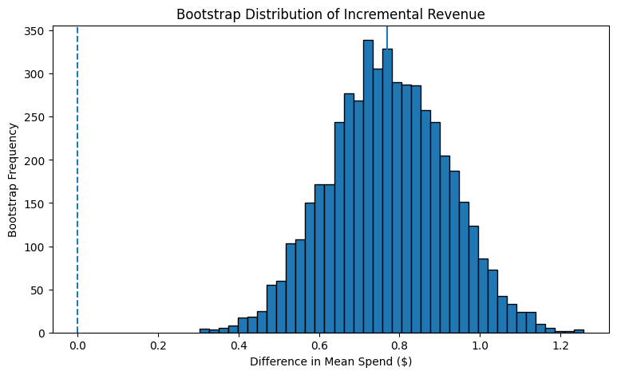
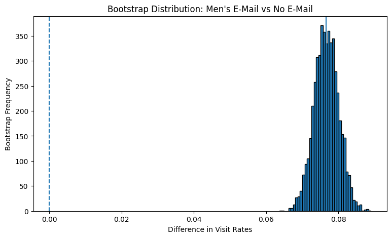
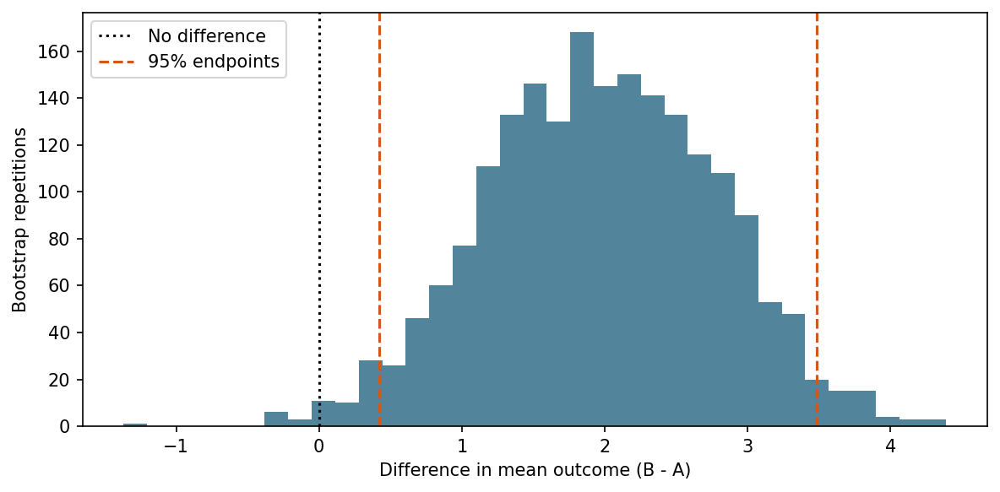

<!doctype html><html lang="en"><head><meta charset="utf-8"><meta name="viewport" content="width=device-width,initial-scale=1"><title>Inference, prediction &amp; A/B testing · DS 6021</title><meta name="description" content="DS 6021: Introduction to Predictive Modeling. An open textbook with concepts, mathematics, Python examples, and optional practice questions."><link rel="icon" type="image/svg+xml" href="data:image/svg+xml,%3Csvg xmlns='http://www.w3.org/2000/svg' viewBox='0 0 32 32'%3E%3Crect width='32' height='32' rx='6' fill='%23232d4b'/%3E%3Cpath d='M7 24V8M7 24h19M9 21l6-7 5 3 6-10' fill='none' stroke='%23ef8c45' stroke-width='2.5'/%3E%3C/svg%3E"><link rel="stylesheet" href="vendor/katex/katex.min.css"><link rel="stylesheet" href="styles.css"><script defer src="app.js"></script><script defer src="readers.js"></script><script defer src="live-python.js"></script><script defer src="demo-data.js"></script><script defer src="demos.js"></script></head><body><a class="skip" href="#main">Skip to content</a><header class="mobile-header"><a href="index.html">DS 6021</a><button id="menu" aria-controls="sidebar" aria-expanded="false">Course menu</button></header><aside id="sidebar"><a class="brand" href="index.html"><span class="brand-mark">DS</span><span>6021<span class="brand-sub">PREDICTIVE MODELING</span></span></a><p class="term">UNIVERSITY OF VIRGINIA</p><nav aria-label="Course"><a class="navlink " href="index.html">Course overview</a><div class="nav-label">THE COURSE</div><a class="navlink " href="module-1.html">01  Data &amp; questions</a><a class="navlink active" href="module-2.html">02  Inference &amp; experiments</a><a class="navlink " href="module-3.html">03  Regression &amp; optimization</a><a class="navlink " href="module-4.html">04  Multiple regression</a><a class="navlink " href="module-5.html">05  Interactions &amp; transforms</a><a class="navlink " href="module-6.html">06  Generalization</a><div class="nav-label">RESOURCES</div><a class="navlink " href="labs.html">Labs &amp; project</a><a class="navlink " href="resources.html">Book guide &amp; references</a><a class="navlink " href="datasets/">Datasets</a></nav><div class="sidebar-foot">Prince Afriyie<br><span>School of Data Science</span></div></aside><main id="main"><div class="topline"><span>UNIVERSITY OF VIRGINIA <b>/</b> MS IN DATA SCIENCE</span><span>AN OPEN COURSE BOOK</span></div><div class="eyebrow">CHAPTER 02</div><h1 class="page-title">Inference, prediction &amp; A/B testing</h1><p class="lede">Use experimental design and resampling to distinguish an observed difference from reliable evidence.</p><div class="anchor-nav"><a href="#materials">Chapter & class code</a><a href="#run-python">Run Python</a><a href="#illustration">Illustration</a><a href="#code">Extra practice</a><a href="#readings">Readings</a><a href="#practice">Optional questions</a></div><div class="code-controls"><button class="button" data-code-visibility aria-pressed="false">Show all code</button><span>Read the outputs first; reveal code when useful.</span></div><section id="materials"><h2 class="toc-title">In this chapter</h2><ol class="lesson-index"><li><a href="#lesson-1">Define the experiment and its estimand</a></li><li><a href="#lesson-2">Bootstrap a difference in mean spending</a></li><li><a href="#lesson-3">Use the same logic for a proportion</a></li><li><a href="#lesson-4">Compare more than two versions</a></li><li><a href="#lesson-5">Turn evidence into a decision</a></li></ol><p class="caption">Lecture concepts and original notebook cells, together in one continuous chapter. Saved outputs are visible; original code is available on demand. The browser exercise below is editable and runnable here.</p></section><article class="textbook"><section class="lesson-section" id="lesson-1"><h2><span class="chapter-number">2.1</span> Define the experiment and its estimand</h2><p>An A/B experiment compares outcomes under alternative treatments. Name the experimental unit, assigned treatment, and outcome. Random assignment helps make treatment groups comparable before treatment, supporting a causal comparison under the design's assumptions. It does not remove noncompliance, interference, attrition, or limits on generalizing to other populations.</p>
<p><strong>Inference</strong> asks about an effect or population quantity. <strong>Prediction</strong> asks how well a rule estimates an outcome for a new case. The same table can support both questions, but they need different designs and evaluations.</p>
<h3>Define the estimand</h3>
<p>For average spending under two email conditions, the target contrast and its estimate are</p>
<p><span class="katex-display"><span class="katex"><span class="katex-mathml"><math xmlns="http://www.w3.org/1998/Math/MathML" display="block"><semantics><mrow><mi>θ</mi><mo>=</mo><msub><mi>μ</mi><mi>B</mi></msub><mo>−</mo><msub><mi>μ</mi><mi>A</mi></msub><mo separator="true">,</mo><mspace width="2em"/><mover accent="true"><mi>θ</mi><mo stretchy="true">^</mo></mover><mo>=</mo><msub><mover accent="true"><mi>Y</mi><mo stretchy="true">‾</mo></mover><mi>B</mi></msub><mo>−</mo><msub><mover accent="true"><mi>Y</mi><mo stretchy="true">‾</mo></mover><mi>A</mi></msub><mi mathvariant="normal">.</mi></mrow><annotation encoding="application/x-tex">\theta=\mu_B-\mu_A,\qquad \widehat\theta=\overline Y_B-\overline Y_A.</annotation></semantics></math></span><span class="katex-html" aria-hidden="true"><span class="katex-base"><span class="katex-strut" style="height:0.6944em;"></span><span class="mord mathnormal" style="margin-right:0.0278em;">θ</span><span class="mspace" style="margin-right:0.2778em;"></span><span class="mrel">=</span><span class="mspace" style="margin-right:0.2778em;"></span></span><span class="katex-base"><span class="katex-strut" style="height:0.7778em;vertical-align:-0.1944em;"></span><span class="mord"><span class="mord mathnormal">μ</span><span class="msupsub"><span class="vlist-t vlist-t2"><span class="vlist-r"><span class="vlist" style="height:0.3283em;"><span style="top:-2.55em;margin-left:0em;margin-right:0.05em;"><span class="pstrut" style="height:2.7em;"></span><span class="katex-sizing reset-size6 size3 mtight"><span class="mord mathnormal mtight" style="margin-right:0.0502em;">B</span></span></span></span><span class="vlist-s">​</span></span><span class="vlist-r"><span class="vlist" style="height:0.15em;"><span></span></span></span></span></span></span><span class="mspace" style="margin-right:0.2222em;"></span><span class="mbin">−</span><span class="mspace" style="margin-right:0.2222em;"></span></span><span class="katex-base"><span class="katex-strut" style="height:1.1289em;vertical-align:-0.1944em;"></span><span class="mord"><span class="mord mathnormal">μ</span><span class="msupsub"><span class="vlist-t vlist-t2"><span class="vlist-r"><span class="vlist" style="height:0.3283em;"><span style="top:-2.55em;margin-left:0em;margin-right:0.05em;"><span class="pstrut" style="height:2.7em;"></span><span class="katex-sizing reset-size6 size3 mtight"><span class="mord mathnormal mtight">A</span></span></span></span><span class="vlist-s">​</span></span><span class="vlist-r"><span class="vlist" style="height:0.15em;"><span></span></span></span></span></span></span><span class="mpunct">,</span><span class="mspace" style="margin-right:2em;"></span><span class="mspace" style="margin-right:0.1667em;"></span><span class="mord katex-accent"><span class="vlist-t"><span class="vlist-r"><span class="vlist" style="height:0.9344em;"><span style="top:-3em;"><span class="pstrut" style="height:3em;"></span><span class="mord mathnormal" style="margin-right:0.0278em;">θ</span></span><span class="svg-align" style="width:calc(100% - 0.1667em);margin-left:0.1667em;top:-3.6944em;"><span class="pstrut" style="height:3em;"></span><span style="height:0.24em;"><svg xmlns="http://www.w3.org/2000/svg" width="100%" height="0.24em" viewBox="0 0 1062 239" preserveAspectRatio="none"><path d="M529 0h5l519 115c5 1 9 5 9 10 0 1-1 2-1 3l-4 22
c-1 5-5 9-11 9h-2L532 67 19 159h-2c-5 0-9-4-11-9l-5-22c-1-6 2-12 8-13z"/></svg></span></span></span></span></span></span><span class="mspace" style="margin-right:0.2778em;"></span><span class="mrel">=</span><span class="mspace" style="margin-right:0.2778em;"></span></span><span class="katex-base"><span class="katex-strut" style="height:1.0333em;vertical-align:-0.15em;"></span><span class="mord"><span class="mord katex-overline"><span class="vlist-t"><span class="vlist-r"><span class="vlist" style="height:0.8833em;"><span style="top:-3em;"><span class="pstrut" style="height:3em;"></span><span class="mord"><span class="mord mathnormal" style="margin-right:0.2222em;">Y</span></span></span><span style="top:-3.8033em;"><span class="pstrut" style="height:3em;"></span><span class="overline-line" style="border-bottom-width:0.04em;"></span></span></span></span></span></span><span class="msupsub"><span class="vlist-t vlist-t2"><span class="vlist-r"><span class="vlist" style="height:0.3283em;"><span style="top:-2.55em;margin-right:0.05em;"><span class="pstrut" style="height:2.7em;"></span><span class="katex-sizing reset-size6 size3 mtight"><span class="mord mathnormal mtight" style="margin-right:0.0502em;">B</span></span></span></span><span class="vlist-s">​</span></span><span class="vlist-r"><span class="vlist" style="height:0.15em;"><span></span></span></span></span></span></span><span class="mspace" style="margin-right:0.2222em;"></span><span class="mbin">−</span><span class="mspace" style="margin-right:0.2222em;"></span></span><span class="katex-base"><span class="katex-strut" style="height:1.0333em;vertical-align:-0.15em;"></span><span class="mord"><span class="mord katex-overline"><span class="vlist-t"><span class="vlist-r"><span class="vlist" style="height:0.8833em;"><span style="top:-3em;"><span class="pstrut" style="height:3em;"></span><span class="mord"><span class="mord mathnormal" style="margin-right:0.2222em;">Y</span></span></span><span style="top:-3.8033em;"><span class="pstrut" style="height:3em;"></span><span class="overline-line" style="border-bottom-width:0.04em;"></span></span></span></span></span></span><span class="msupsub"><span class="vlist-t vlist-t2"><span class="vlist-r"><span class="vlist" style="height:0.3283em;"><span style="top:-2.55em;margin-right:0.05em;"><span class="pstrut" style="height:2.7em;"></span><span class="katex-sizing reset-size6 size3 mtight"><span class="mord mathnormal mtight">A</span></span></span></span><span class="vlist-s">​</span></span><span class="vlist-r"><span class="vlist" style="height:0.15em;"><span></span></span></span></span></span></span><span class="mord">.</span></span></span></span></span></p>
<p>The first describes the population or treatment conditions; the second comes from samples. Positive values favor B. Reversing the contrast reverses the sign, so keep the order fixed.</p>
<p>The class notebook uses the Hillstrom email experiment. Inspect treatment groups and spending distributions. A mean can be economically meaningful even when skewness and many zeros make it unlike a typical individual's spending.</p>
<h3>Assignment, sampling, and causal interpretation</h3>
<p>Random <strong>sampling</strong> supports generalization to a population. Random <strong>assignment</strong> supports comparison of treatment conditions among experimental units. An experiment can have excellent assignment but a narrow study population. Keep both questions explicit when writing a conclusion.</p>
<p>One way to express the causal target is with potential outcomes: <span class="katex"><span class="katex-mathml"><math xmlns="http://www.w3.org/1998/Math/MathML"><semantics><mrow><msub><mi>Y</mi><mi>i</mi></msub><mo stretchy="false">(</mo><mn>1</mn><mo stretchy="false">)</mo></mrow><annotation encoding="application/x-tex">Y_i(1)</annotation></semantics></math></span><span class="katex-html" aria-hidden="true"><span class="katex-base"><span class="katex-strut" style="height:1em;vertical-align:-0.25em;"></span><span class="mord"><span class="mord mathnormal" style="margin-right:0.2222em;">Y</span><span class="msupsub"><span class="vlist-t vlist-t2"><span class="vlist-r"><span class="vlist" style="height:0.3117em;"><span style="top:-2.55em;margin-left:-0.2222em;margin-right:0.05em;"><span class="pstrut" style="height:2.7em;"></span><span class="katex-sizing reset-size6 size3 mtight"><span class="mord mathnormal mtight">i</span></span></span></span><span class="vlist-s">​</span></span><span class="vlist-r"><span class="vlist" style="height:0.15em;"><span></span></span></span></span></span></span><span class="mopen">(</span><span class="mord">1</span><span class="mclose">)</span></span></span></span> is unit <span class="katex"><span class="katex-mathml"><math xmlns="http://www.w3.org/1998/Math/MathML"><semantics><mrow><mi>i</mi></mrow><annotation encoding="application/x-tex">i</annotation></semantics></math></span><span class="katex-html" aria-hidden="true"><span class="katex-base"><span class="katex-strut" style="height:0.6595em;"></span><span class="mord mathnormal">i</span></span></span></span>'s outcome under treatment and <span class="katex"><span class="katex-mathml"><math xmlns="http://www.w3.org/1998/Math/MathML"><semantics><mrow><msub><mi>Y</mi><mi>i</mi></msub><mo stretchy="false">(</mo><mn>0</mn><mo stretchy="false">)</mo></mrow><annotation encoding="application/x-tex">Y_i(0)</annotation></semantics></math></span><span class="katex-html" aria-hidden="true"><span class="katex-base"><span class="katex-strut" style="height:1em;vertical-align:-0.25em;"></span><span class="mord"><span class="mord mathnormal" style="margin-right:0.2222em;">Y</span><span class="msupsub"><span class="vlist-t vlist-t2"><span class="vlist-r"><span class="vlist" style="height:0.3117em;"><span style="top:-2.55em;margin-left:-0.2222em;margin-right:0.05em;"><span class="pstrut" style="height:2.7em;"></span><span class="katex-sizing reset-size6 size3 mtight"><span class="mord mathnormal mtight">i</span></span></span></span><span class="vlist-s">​</span></span><span class="vlist-r"><span class="vlist" style="height:0.15em;"><span></span></span></span></span></span></span><span class="mopen">(</span><span class="mord">0</span><span class="mclose">)</span></span></span></span> under control. We observe only one for each unit. The average effect is</p>
<p><span class="katex-display"><span class="katex"><span class="katex-mathml"><math xmlns="http://www.w3.org/1998/Math/MathML" display="block"><semantics><mrow><mi>τ</mi><mo>=</mo><mi mathvariant="double-struck">E</mi><mo stretchy="false">[</mo><mi>Y</mi><mo stretchy="false">(</mo><mn>1</mn><mo stretchy="false">)</mo><mo>−</mo><mi>Y</mi><mo stretchy="false">(</mo><mn>0</mn><mo stretchy="false">)</mo><mo stretchy="false">]</mo><mi mathvariant="normal">.</mi></mrow><annotation encoding="application/x-tex">\tau=\mathbb E[Y(1)-Y(0)].</annotation></semantics></math></span><span class="katex-html" aria-hidden="true"><span class="katex-base"><span class="katex-strut" style="height:0.4306em;"></span><span class="mord mathnormal" style="margin-right:0.1132em;">τ</span><span class="mspace" style="margin-right:0.2778em;"></span><span class="mrel">=</span><span class="mspace" style="margin-right:0.2778em;"></span></span><span class="katex-base"><span class="katex-strut" style="height:1em;vertical-align:-0.25em;"></span><span class="mord mathbb">E</span><span class="mopen">[</span><span class="mord mathnormal" style="margin-right:0.2222em;">Y</span><span class="mopen">(</span><span class="mord">1</span><span class="mclose">)</span><span class="mspace" style="margin-right:0.2222em;"></span><span class="mbin">−</span><span class="mspace" style="margin-right:0.2222em;"></span></span><span class="katex-base"><span class="katex-strut" style="height:1em;vertical-align:-0.25em;"></span><span class="mord mathnormal" style="margin-right:0.2222em;">Y</span><span class="mopen">(</span><span class="mord">0</span><span class="mclose">)]</span><span class="mord">.</span></span></span></span></span></p>
<p>Under randomized assignment and suitable assumptions about treatment consistency and interference, a difference between group averages estimates this causal contrast. Without those conditions, a difference may instead combine treatment effects with pre-existing group differences.</p><aside class="teaching-note">The Hillstrom dataset is loaded by scikit-uplift in the notebook; it is not one of the uploaded CSV files.</aside><div class="application"><div class="application-head"><div><span class="eyebrow">APPLY THE NOTES</span><h3>AB Testing</h3></div><a class="button" href="https://colab.research.google.com/github/afriyiep1/ds6021-predictive-modeling/blob/main/docs/notebooks/ab-testing.ipynb" target="_blank" rel="noopener noreferrer">Run in Colab</a></div><p class="cell-guide">Saved outputs are visible below. Reveal the original Python when you want to inspect it; full notebooks run in Colab.</p><div class="notebook-cell" data-book="ab-testing" data-cell="0"><details class="code-reveal"><summary>Show Python · Cell 1</summary><div class="cell-header"><span>Cell 1</span><button class="copy" data-copy="codegroup-4-0">Copy cell</button></div><pre class="source-code"><code id="codegroup-4-0">!pip install scikit-uplift -q</code></pre></details><div class="cell-output"><div class="output-label">SAVED NOTEBOOK OUTPUT</div><pre class="notebook-text">[?25l   ━━━━━━━━━━━━━━━━━━━━━━━━━━━━━━━━━━━━━━━━ 0.0/42.1 kB ? eta -:--:--
   ━━━━━━━━━━━━━━━━━━━━━━━━━━━━━━━━━━━━━━━━ 42.1/42.1 kB 1.1 MB/s eta 0:00:00
[?25h</pre></div></div><div class="notebook-cell" data-book="ab-testing" data-cell="1"><details class="code-reveal"><summary>Show Python · Cell 2</summary><div class="cell-header"><span>Cell 2</span><button class="copy" data-copy="codegroup-4-1">Copy cell</button></div><pre class="source-code"><code id="codegroup-4-1">import pandas as pd
import numpy as np
import matplotlib.pyplot as plt
import plotly.express as px

from scipy import stats
from sklift.datasets import fetch_hillstrom</code></pre></details></div><div class="notebook-cell" data-book="ab-testing" data-cell="2"><details class="code-reveal"><summary>Show Python · Cell 3</summary><div class="cell-header"><span>Cell 3</span><button class="copy" data-copy="codegroup-4-2">Copy cell</button></div><pre class="source-code"><code id="codegroup-4-2">dataset = fetch_hillstrom(
    target_col=&quot;all&quot;
)

X = dataset.data.copy()
y = dataset.target.copy()
treatment = dataset.treatment.copy()

hillstrom = X.copy()

hillstrom[&quot;segment&quot;] = treatment
hillstrom[&quot;visit&quot;] = y[&quot;visit&quot;]
hillstrom[&quot;conversion&quot;] = y[&quot;conversion&quot;]
hillstrom[&quot;spend&quot;] = y[&quot;spend&quot;]

hillstrom.head()</code></pre></details><div class="cell-output"><div class="output-label">SAVED NOTEBOOK OUTPUT</div><div class="table-wrap notebook-table"><table>
  <thead>
    <tr>
      <th></th>
      <th>recency</th>
      <th>history_segment</th>
      <th>history</th>
      <th>mens</th>
      <th>womens</th>
      <th>zip_code</th>
      <th>newbie</th>
      <th>channel</th>
      <th>segment</th>
      <th>visit</th>
      <th>conversion</th>
      <th>spend</th>
    </tr>
  </thead>
  <tbody>
    <tr>
      <th>0</th>
      <td>10</td>
      <td>2) $100 - $200</td>
      <td>142.44</td>
      <td>1</td>
      <td>0</td>
      <td>Surburban</td>
      <td>0</td>
      <td>Phone</td>
      <td>Womens E-Mail</td>
      <td>0</td>
      <td>0</td>
      <td>0.0</td>
    </tr>
    <tr>
      <th>1</th>
      <td>6</td>
      <td>3) $200 - $350</td>
      <td>329.08</td>
      <td>1</td>
      <td>1</td>
      <td>Rural</td>
      <td>1</td>
      <td>Web</td>
      <td>No E-Mail</td>
      <td>0</td>
      <td>0</td>
      <td>0.0</td>
    </tr>
    <tr>
      <th>2</th>
      <td>7</td>
      <td>2) $100 - $200</td>
      <td>180.65</td>
      <td>0</td>
      <td>1</td>
      <td>Surburban</td>
      <td>1</td>
      <td>Web</td>
      <td>Womens E-Mail</td>
      <td>0</td>
      <td>0</td>
      <td>0.0</td>
    </tr>
    <tr>
      <th>3</th>
      <td>9</td>
      <td>5) $500 - $750</td>
      <td>675.83</td>
      <td>1</td>
      <td>0</td>
      <td>Rural</td>
      <td>1</td>
      <td>Web</td>
      <td>Mens E-Mail</td>
      <td>0</td>
      <td>0</td>
      <td>0.0</td>
    </tr>
    <tr>
      <th>4</th>
      <td>2</td>
      <td>1) $0 - $100</td>
      <td>45.34</td>
      <td>1</td>
      <td>0</td>
      <td>Urban</td>
      <td>0</td>
      <td>Web</td>
      <td>Womens E-Mail</td>
      <td>0</td>
      <td>0</td>
      <td>0.0</td>
    </tr>
  </tbody>
</table></div></div></div><div class="notebook-cell" data-book="ab-testing" data-cell="3"><details class="code-reveal"><summary>Show Python · Cell 4</summary><div class="cell-header"><span>Cell 4</span><button class="copy" data-copy="codegroup-4-3">Copy cell</button></div><pre class="source-code"><code id="codegroup-4-3">hillstrom[&quot;segment&quot;].value_counts()</code></pre></details><div class="cell-output"><div class="output-label">SAVED NOTEBOOK OUTPUT</div><div class="table-wrap notebook-table"><table>
  <thead>
    <tr>
      <th></th>
      <th>count</th>
    </tr>
    <tr>
      <th>segment</th>
      <th></th>
    </tr>
  </thead>
  <tbody>
    <tr>
      <th>Womens E-Mail</th>
      <td>21387</td>
    </tr>
    <tr>
      <th>Mens E-Mail</th>
      <td>21307</td>
    </tr>
    <tr>
      <th>No E-Mail</th>
      <td>21306</td>
    </tr>
  </tbody>
</table></div></div></div><div class="notebook-cell" data-book="ab-testing" data-cell="4"><details class="code-reveal"><summary>Show Python · Cell 5</summary><div class="cell-header"><span>Cell 5</span><button class="copy" data-copy="codegroup-4-4">Copy cell</button></div><pre class="source-code"><code id="codegroup-4-4">ab = hillstrom[
    hillstrom[&quot;segment&quot;].isin(
        [&quot;No E-Mail&quot;, &quot;Mens E-Mail&quot;]
    )
].copy()</code></pre></details></div><div class="notebook-cell" data-book="ab-testing" data-cell="5"><details class="code-reveal"><summary>Show Python · Cell 6</summary><div class="cell-header"><span>Cell 6</span><button class="copy" data-copy="codegroup-4-5">Copy cell</button></div><pre class="source-code"><code id="codegroup-4-5">spend_summary = (
    ab.groupby(&quot;segment&quot;)
      [&quot;spend&quot;]
      .agg(
          [&quot;count&quot;, &quot;mean&quot;, &quot;median&quot;, &quot;std&quot;, &quot;sum&quot;]
      )
)

spend_summary</code></pre></details><div class="cell-output"><div class="output-label">SAVED NOTEBOOK OUTPUT</div><div class="table-wrap notebook-table"><table>
  <thead>
    <tr>
      <th></th>
      <th>count</th>
      <th>mean</th>
      <th>median</th>
      <th>std</th>
      <th>sum</th>
    </tr>
    <tr>
      <th>segment</th>
      <th></th>
      <th></th>
      <th></th>
      <th></th>
      <th></th>
    </tr>
  </thead>
  <tbody>
    <tr>
      <th>Mens E-Mail</th>
      <td>21307</td>
      <td>1.422617</td>
      <td>0.0</td>
      <td>17.754205</td>
      <td>30311.69</td>
    </tr>
    <tr>
      <th>No E-Mail</th>
      <td>21306</td>
      <td>0.652789</td>
      <td>0.0</td>
      <td>11.588200</td>
      <td>13908.33</td>
    </tr>
  </tbody>
</table></div></div></div><div class="notebook-cell" data-book="ab-testing" data-cell="6"><details class="code-reveal"><summary>Show Python · Cell 7</summary><div class="cell-header"><span>Cell 7</span><button class="copy" data-copy="codegroup-4-6">Copy cell</button></div><pre class="source-code"><code id="codegroup-4-6">mean_control = (
    ab.loc[
        ab[&quot;segment&quot;] == &quot;No E-Mail&quot;,
        &quot;spend&quot;
    ]
    .mean()
)

mean_treatment = (
    ab.loc[
        ab[&quot;segment&quot;] == &quot;Mens E-Mail&quot;,
        &quot;spend&quot;
    ]
    .mean()
)

revenue_lift = (
    mean_treatment
    - mean_control
)

print(
    f&quot;Control revenue/customer: &quot;
    f&quot;${mean_control:.2f}&quot;
)

print(
    f&quot;Treatment revenue/customer: &quot;
    f&quot;${mean_treatment:.2f}&quot;
)

print(
    f&quot;Incremental revenue/customer: &quot;
    f&quot;${revenue_lift:.2f}&quot;
)</code></pre></details><div class="cell-output"><div class="output-label">SAVED NOTEBOOK OUTPUT</div><pre class="notebook-text">Control revenue/customer: $0.65
Treatment revenue/customer: $1.42
Incremental revenue/customer: $0.77
</pre></div></div><p class="notebook-download"><a href="notebooks/ab-testing.ipynb" download>Download this notebook</a> · <a href="datasets/">Get the datasets</a></p></div></section><section class="lesson-section" id="lesson-2"><h2><span class="chapter-number">2.2</span> Bootstrap a difference in mean spending</h2><p>The estimate changes from sample to sample. A <strong>bootstrap</strong> approximates sampling variation by sampling observed units with replacement and recomputing the statistic.</p>
<p>For two independent groups, repeat for <span class="katex"><span class="katex-mathml"><math xmlns="http://www.w3.org/1998/Math/MathML"><semantics><mrow><mi>b</mi><mo>=</mo><mn>1</mn><mo separator="true">,</mo><mo>…</mo><mo separator="true">,</mo><mi>B</mi></mrow><annotation encoding="application/x-tex">b=1,\ldots,B</annotation></semantics></math></span><span class="katex-html" aria-hidden="true"><span class="katex-base"><span class="katex-strut" style="height:0.6944em;"></span><span class="mord mathnormal">b</span><span class="mspace" style="margin-right:0.2778em;"></span><span class="mrel">=</span><span class="mspace" style="margin-right:0.2778em;"></span></span><span class="katex-base"><span class="katex-strut" style="height:0.8778em;vertical-align:-0.1944em;"></span><span class="mord">1</span><span class="mpunct">,</span><span class="mspace" style="margin-right:0.1667em;"></span><span class="minner">…</span><span class="mspace" style="margin-right:0.1667em;"></span><span class="mpunct">,</span><span class="mspace" style="margin-right:0.1667em;"></span><span class="mord mathnormal" style="margin-right:0.0502em;">B</span></span></span></span>: sample <span class="katex"><span class="katex-mathml"><math xmlns="http://www.w3.org/1998/Math/MathML"><semantics><mrow><msub><mi>n</mi><mi>A</mi></msub></mrow><annotation encoding="application/x-tex">n_A</annotation></semantics></math></span><span class="katex-html" aria-hidden="true"><span class="katex-base"><span class="katex-strut" style="height:0.5806em;vertical-align:-0.15em;"></span><span class="mord"><span class="mord mathnormal">n</span><span class="msupsub"><span class="vlist-t vlist-t2"><span class="vlist-r"><span class="vlist" style="height:0.3283em;"><span style="top:-2.55em;margin-left:0em;margin-right:0.05em;"><span class="pstrut" style="height:2.7em;"></span><span class="katex-sizing reset-size6 size3 mtight"><span class="mord mathnormal mtight">A</span></span></span></span><span class="vlist-s">​</span></span><span class="vlist-r"><span class="vlist" style="height:0.15em;"><span></span></span></span></span></span></span></span></span></span> observations from A, independently sample <span class="katex"><span class="katex-mathml"><math xmlns="http://www.w3.org/1998/Math/MathML"><semantics><mrow><msub><mi>n</mi><mi>B</mi></msub></mrow><annotation encoding="application/x-tex">n_B</annotation></semantics></math></span><span class="katex-html" aria-hidden="true"><span class="katex-base"><span class="katex-strut" style="height:0.5806em;vertical-align:-0.15em;"></span><span class="mord"><span class="mord mathnormal">n</span><span class="msupsub"><span class="vlist-t vlist-t2"><span class="vlist-r"><span class="vlist" style="height:0.3283em;"><span style="top:-2.55em;margin-left:0em;margin-right:0.05em;"><span class="pstrut" style="height:2.7em;"></span><span class="katex-sizing reset-size6 size3 mtight"><span class="mord mathnormal mtight" style="margin-right:0.0502em;">B</span></span></span></span><span class="vlist-s">​</span></span><span class="vlist-r"><span class="vlist" style="height:0.15em;"><span></span></span></span></span></span></span></span></span></span> from B, and calculate</p>
<p><span class="katex-display"><span class="katex"><span class="katex-mathml"><math xmlns="http://www.w3.org/1998/Math/MathML" display="block"><semantics><mrow><msup><mover accent="true"><mi>θ</mi><mo stretchy="true">^</mo></mover><mrow><mo>∗</mo><mo stretchy="false">(</mo><mi>b</mi><mo stretchy="false">)</mo></mrow></msup><mo>=</mo><msubsup><mover accent="true"><mi>Y</mi><mo stretchy="true">‾</mo></mover><mi>B</mi><mrow><mo>∗</mo><mo stretchy="false">(</mo><mi>b</mi><mo stretchy="false">)</mo></mrow></msubsup><mo>−</mo><msubsup><mover accent="true"><mi>Y</mi><mo stretchy="true">‾</mo></mover><mi>A</mi><mrow><mo>∗</mo><mo stretchy="false">(</mo><mi>b</mi><mo stretchy="false">)</mo></mrow></msubsup><mi mathvariant="normal">.</mi></mrow><annotation encoding="application/x-tex">\widehat\theta^{*(b)}=\overline Y_B^{*(b)}-\overline Y_A^{*(b)}.</annotation></semantics></math></span><span class="katex-html" aria-hidden="true"><span class="katex-base"><span class="katex-strut" style="height:0.938em;"></span><span class="mord"><span class="mord katex-accent"><span class="vlist-t"><span class="vlist-r"><span class="vlist" style="height:0.9344em;"><span style="top:-3em;"><span class="pstrut" style="height:3em;"></span><span class="mord mathnormal" style="margin-right:0.0278em;">θ</span></span><span class="svg-align" style="width:calc(100% - 0.1667em);margin-left:0.1667em;top:-3.6944em;"><span class="pstrut" style="height:3em;"></span><span style="height:0.24em;"><svg xmlns="http://www.w3.org/2000/svg" width="100%" height="0.24em" viewBox="0 0 1062 239" preserveAspectRatio="none"><path d="M529 0h5l519 115c5 1 9 5 9 10 0 1-1 2-1 3l-4 22
c-1 5-5 9-11 9h-2L532 67 19 159h-2c-5 0-9-4-11-9l-5-22c-1-6 2-12 8-13z"/></svg></span></span></span></span></span></span><span class="msupsub"><span class="vlist-t"><span class="vlist-r"><span class="vlist" style="height:0.938em;"><span style="top:-3.113em;margin-right:0.05em;"><span class="pstrut" style="height:2.7em;"></span><span class="katex-sizing reset-size6 size3 mtight"><span class="mord mtight"><span class="mord mtight">∗</span><span class="mopen mtight">(</span><span class="mord mathnormal mtight">b</span><span class="mclose mtight">)</span></span></span></span></span></span></span></span></span><span class="mspace" style="margin-right:0.2778em;"></span><span class="mrel">=</span><span class="mspace" style="margin-right:0.2778em;"></span></span><span class="katex-base"><span class="katex-strut" style="height:1.4082em;vertical-align:-0.247em;"></span><span class="mord"><span class="mord katex-overline"><span class="vlist-t"><span class="vlist-r"><span class="vlist" style="height:0.8833em;"><span style="top:-3em;"><span class="pstrut" style="height:3em;"></span><span class="mord"><span class="mord mathnormal" style="margin-right:0.2222em;">Y</span></span></span><span style="top:-3.8033em;"><span class="pstrut" style="height:3em;"></span><span class="overline-line" style="border-bottom-width:0.04em;"></span></span></span></span></span></span><span class="msupsub"><span class="vlist-t vlist-t2"><span class="vlist-r"><span class="vlist" style="height:1.1612em;"><span style="top:-2.453em;margin-right:0.05em;"><span class="pstrut" style="height:2.7em;"></span><span class="katex-sizing reset-size6 size3 mtight"><span class="mord mathnormal mtight" style="margin-right:0.0502em;">B</span></span></span><span style="top:-3.3362em;margin-right:0.05em;"><span class="pstrut" style="height:2.7em;"></span><span class="katex-sizing reset-size6 size3 mtight"><span class="mord mtight"><span class="mord mtight">∗</span><span class="mopen mtight">(</span><span class="mord mathnormal mtight">b</span><span class="mclose mtight">)</span></span></span></span></span><span class="vlist-s">​</span></span><span class="vlist-r"><span class="vlist" style="height:0.247em;"><span></span></span></span></span></span></span><span class="mspace" style="margin-right:0.2222em;"></span><span class="mbin">−</span><span class="mspace" style="margin-right:0.2222em;"></span></span><span class="katex-base"><span class="katex-strut" style="height:1.4082em;vertical-align:-0.247em;"></span><span class="mord"><span class="mord katex-overline"><span class="vlist-t"><span class="vlist-r"><span class="vlist" style="height:0.8833em;"><span style="top:-3em;"><span class="pstrut" style="height:3em;"></span><span class="mord"><span class="mord mathnormal" style="margin-right:0.2222em;">Y</span></span></span><span style="top:-3.8033em;"><span class="pstrut" style="height:3em;"></span><span class="overline-line" style="border-bottom-width:0.04em;"></span></span></span></span></span></span><span class="msupsub"><span class="vlist-t vlist-t2"><span class="vlist-r"><span class="vlist" style="height:1.1612em;"><span style="top:-2.453em;margin-right:0.05em;"><span class="pstrut" style="height:2.7em;"></span><span class="katex-sizing reset-size6 size3 mtight"><span class="mord mathnormal mtight">A</span></span></span><span style="top:-3.3362em;margin-right:0.05em;"><span class="pstrut" style="height:2.7em;"></span><span class="katex-sizing reset-size6 size3 mtight"><span class="mord mtight"><span class="mord mtight">∗</span><span class="mopen mtight">(</span><span class="mord mathnormal mtight">b</span><span class="mclose mtight">)</span></span></span></span></span><span class="vlist-s">​</span></span><span class="vlist-r"><span class="vlist" style="height:0.247em;"><span></span></span></span></span></span></span><span class="mord">.</span></span></span></span></span></p>
<p>A percentile 95% interval uses the 2.5th and 97.5th percentiles. The bootstrap standard deviation estimates the standard error. More replications reduce simulation noise; they do not create new participants.</p>
<h3>Interpret uncertainty</h3>
<p>Report endpoints in spending units. An interval containing zero does not prove equality. An interval entirely above zero supports a positive contrast, subject to the design and approximation. Confidence describes the repeated-sampling procedure, not a 95% probability about a fixed parameter after observing this particular interval.</p>
<p>Resample the <strong>independent unit</strong>. With repeated observations per randomized store or customer, independent row resampling can understate uncertainty; a cluster-level procedure may be needed.</p>
<h3>Why uncertainty depends on both groups</h3>
<p>For independent samples, the variance of their difference adds:</p>
<p><span class="katex-display"><span class="katex"><span class="katex-mathml"><math xmlns="http://www.w3.org/1998/Math/MathML" display="block"><semantics><mrow><mi mathvariant="normal">Var</mi><mo>⁡</mo><mo stretchy="false">(</mo><msub><mover accent="true"><mi>Y</mi><mo stretchy="true">‾</mo></mover><mi>B</mi></msub><mo>−</mo><msub><mover accent="true"><mi>Y</mi><mo stretchy="true">‾</mo></mover><mi>A</mi></msub><mo stretchy="false">)</mo><mo>=</mo><mfrac><msubsup><mi>σ</mi><mi>B</mi><mn>2</mn></msubsup><msub><mi>n</mi><mi>B</mi></msub></mfrac><mo>+</mo><mfrac><msubsup><mi>σ</mi><mi>A</mi><mn>2</mn></msubsup><msub><mi>n</mi><mi>A</mi></msub></mfrac><mi mathvariant="normal">.</mi></mrow><annotation encoding="application/x-tex">\operatorname{Var}(\overline Y_B-\overline Y_A)=\frac{\sigma_B^2}{n_B}+\frac{\sigma_A^2}{n_A}.</annotation></semantics></math></span><span class="katex-html" aria-hidden="true"><span class="katex-base"><span class="katex-strut" style="height:1.1333em;vertical-align:-0.25em;"></span><span class="mop"><span class="mord mathrm">Var</span></span><span class="mopen">(</span><span class="mord"><span class="mord katex-overline"><span class="vlist-t"><span class="vlist-r"><span class="vlist" style="height:0.8833em;"><span style="top:-3em;"><span class="pstrut" style="height:3em;"></span><span class="mord"><span class="mord mathnormal" style="margin-right:0.2222em;">Y</span></span></span><span style="top:-3.8033em;"><span class="pstrut" style="height:3em;"></span><span class="overline-line" style="border-bottom-width:0.04em;"></span></span></span></span></span></span><span class="msupsub"><span class="vlist-t vlist-t2"><span class="vlist-r"><span class="vlist" style="height:0.3283em;"><span style="top:-2.55em;margin-right:0.05em;"><span class="pstrut" style="height:2.7em;"></span><span class="katex-sizing reset-size6 size3 mtight"><span class="mord mathnormal mtight" style="margin-right:0.0502em;">B</span></span></span></span><span class="vlist-s">​</span></span><span class="vlist-r"><span class="vlist" style="height:0.15em;"><span></span></span></span></span></span></span><span class="mspace" style="margin-right:0.2222em;"></span><span class="mbin">−</span><span class="mspace" style="margin-right:0.2222em;"></span></span><span class="katex-base"><span class="katex-strut" style="height:1.1333em;vertical-align:-0.25em;"></span><span class="mord"><span class="mord katex-overline"><span class="vlist-t"><span class="vlist-r"><span class="vlist" style="height:0.8833em;"><span style="top:-3em;"><span class="pstrut" style="height:3em;"></span><span class="mord"><span class="mord mathnormal" style="margin-right:0.2222em;">Y</span></span></span><span style="top:-3.8033em;"><span class="pstrut" style="height:3em;"></span><span class="overline-line" style="border-bottom-width:0.04em;"></span></span></span></span></span></span><span class="msupsub"><span class="vlist-t vlist-t2"><span class="vlist-r"><span class="vlist" style="height:0.3283em;"><span style="top:-2.55em;margin-right:0.05em;"><span class="pstrut" style="height:2.7em;"></span><span class="katex-sizing reset-size6 size3 mtight"><span class="mord mathnormal mtight">A</span></span></span></span><span class="vlist-s">​</span></span><span class="vlist-r"><span class="vlist" style="height:0.15em;"><span></span></span></span></span></span></span><span class="mclose">)</span><span class="mspace" style="margin-right:0.2778em;"></span><span class="mrel">=</span><span class="mspace" style="margin-right:0.2778em;"></span></span><span class="katex-base"><span class="katex-strut" style="height:2.3271em;vertical-align:-0.836em;"></span><span class="mord"><span class="mopen nulldelimiter"></span><span class="mfrac"><span class="vlist-t vlist-t2"><span class="vlist-r"><span class="vlist" style="height:1.4911em;"><span style="top:-2.314em;"><span class="pstrut" style="height:3em;"></span><span class="mord"><span class="mord"><span class="mord mathnormal">n</span><span class="msupsub"><span class="vlist-t vlist-t2"><span class="vlist-r"><span class="vlist" style="height:0.3283em;"><span style="top:-2.55em;margin-left:0em;margin-right:0.05em;"><span class="pstrut" style="height:2.7em;"></span><span class="katex-sizing reset-size6 size3 mtight"><span class="mord mathnormal mtight" style="margin-right:0.0502em;">B</span></span></span></span><span class="vlist-s">​</span></span><span class="vlist-r"><span class="vlist" style="height:0.15em;"><span></span></span></span></span></span></span></span></span><span style="top:-3.23em;"><span class="pstrut" style="height:3em;"></span><span class="frac-line" style="border-bottom-width:0.04em;"></span></span><span style="top:-3.677em;"><span class="pstrut" style="height:3em;"></span><span class="mord"><span class="mord"><span class="mord mathnormal" style="margin-right:0.0359em;">σ</span><span class="msupsub"><span class="vlist-t vlist-t2"><span class="vlist-r"><span class="vlist" style="height:0.8141em;"><span style="top:-2.4247em;margin-left:-0.0359em;margin-right:0.05em;"><span class="pstrut" style="height:2.7em;"></span><span class="katex-sizing reset-size6 size3 mtight"><span class="mord mathnormal mtight" style="margin-right:0.0502em;">B</span></span></span><span style="top:-3.063em;margin-right:0.05em;"><span class="pstrut" style="height:2.7em;"></span><span class="katex-sizing reset-size6 size3 mtight"><span class="mord mtight">2</span></span></span></span><span class="vlist-s">​</span></span><span class="vlist-r"><span class="vlist" style="height:0.2753em;"><span></span></span></span></span></span></span></span></span></span><span class="vlist-s">​</span></span><span class="vlist-r"><span class="vlist" style="height:0.836em;"><span></span></span></span></span></span><span class="mclose nulldelimiter"></span></span><span class="mspace" style="margin-right:0.2222em;"></span><span class="mbin">+</span><span class="mspace" style="margin-right:0.2222em;"></span></span><span class="katex-base"><span class="katex-strut" style="height:2.3271em;vertical-align:-0.836em;"></span><span class="mord"><span class="mopen nulldelimiter"></span><span class="mfrac"><span class="vlist-t vlist-t2"><span class="vlist-r"><span class="vlist" style="height:1.4911em;"><span style="top:-2.314em;"><span class="pstrut" style="height:3em;"></span><span class="mord"><span class="mord"><span class="mord mathnormal">n</span><span class="msupsub"><span class="vlist-t vlist-t2"><span class="vlist-r"><span class="vlist" style="height:0.3283em;"><span style="top:-2.55em;margin-left:0em;margin-right:0.05em;"><span class="pstrut" style="height:2.7em;"></span><span class="katex-sizing reset-size6 size3 mtight"><span class="mord mathnormal mtight">A</span></span></span></span><span class="vlist-s">​</span></span><span class="vlist-r"><span class="vlist" style="height:0.15em;"><span></span></span></span></span></span></span></span></span><span style="top:-3.23em;"><span class="pstrut" style="height:3em;"></span><span class="frac-line" style="border-bottom-width:0.04em;"></span></span><span style="top:-3.677em;"><span class="pstrut" style="height:3em;"></span><span class="mord"><span class="mord"><span class="mord mathnormal" style="margin-right:0.0359em;">σ</span><span class="msupsub"><span class="vlist-t vlist-t2"><span class="vlist-r"><span class="vlist" style="height:0.8141em;"><span style="top:-2.4247em;margin-left:-0.0359em;margin-right:0.05em;"><span class="pstrut" style="height:2.7em;"></span><span class="katex-sizing reset-size6 size3 mtight"><span class="mord mathnormal mtight">A</span></span></span><span style="top:-3.063em;margin-right:0.05em;"><span class="pstrut" style="height:2.7em;"></span><span class="katex-sizing reset-size6 size3 mtight"><span class="mord mtight">2</span></span></span></span><span class="vlist-s">​</span></span><span class="vlist-r"><span class="vlist" style="height:0.2753em;"><span></span></span></span></span></span></span></span></span></span><span class="vlist-s">​</span></span><span class="vlist-r"><span class="vlist" style="height:0.836em;"><span></span></span></span></span></span><span class="mclose nulldelimiter"></span></span><span class="mord">.</span></span></span></span></span></p>
<p>A plug-in standard error is the square root after replacing population variances by sample variances. This formula explains why a noisy or tiny comparison group can dominate uncertainty even if the other group is large. The bootstrap approximates this variation without requiring you to write a separate variance formula for every statistic.</p>
<p><strong>Illustrative decision:</strong> An interval from −0.20 to 1.10 spending units leaves both a small decrease and a worthwhile increase plausible. An interval from 0.10 to 0.30 excludes zero, yet can still be too small if the implementation threshold is 0.50. These are invented examples for interpretation, not results from the class notebook.</p><div class="application"><div class="application-head"><div><span class="eyebrow">APPLY THE NOTES</span><h3>AB Testing</h3></div><a class="button" href="https://colab.research.google.com/github/afriyiep1/ds6021-predictive-modeling/blob/main/docs/notebooks/ab-testing.ipynb" target="_blank" rel="noopener noreferrer">Run in Colab</a></div><p class="cell-guide">Saved outputs are visible below. Reveal the original Python when you want to inspect it; full notebooks run in Colab.</p><div class="notebook-cell" data-book="ab-testing" data-cell="7"><details class="code-reveal"><summary>Show Python · Cell 8</summary><div class="cell-header"><span>Cell 8</span><button class="copy" data-copy="codegroup-5-7">Copy cell</button></div><pre class="source-code"><code id="codegroup-5-7">control_spend = (
    ab.loc[
        ab[&quot;segment&quot;] == &quot;No E-Mail&quot;,
        &quot;spend&quot;
    ]
    .to_numpy()
)

treatment_spend = (
    ab.loc[
        ab[&quot;segment&quot;] == &quot;Mens E-Mail&quot;,
        &quot;spend&quot;
    ]
    .to_numpy()
)</code></pre></details></div><div class="notebook-cell" data-book="ab-testing" data-cell="8"><details class="code-reveal"><summary>Show Python · Cell 9</summary><div class="cell-header"><span>Cell 9</span><button class="copy" data-copy="codegroup-5-8">Copy cell</button></div><pre class="source-code"><code id="codegroup-5-8">rng = np.random.default_rng(6021)
B = 5000

boot_spend_diff = np.empty(B)

for b in range(B):

    control_star = rng.choice(
        control_spend,
        size=len(control_spend),
        replace=True
    )

    treatment_star = rng.choice(
        treatment_spend,
        size=len(treatment_spend),
        replace=True
    )

    boot_spend_diff[b] = (
        treatment_star.mean()
        - control_star.mean()
    )</code></pre></details></div><div class="notebook-cell" data-book="ab-testing" data-cell="9"><details class="code-reveal"><summary>Show Python · Cell 10</summary><div class="cell-header"><span>Cell 10</span><button class="copy" data-copy="codegroup-5-9">Copy cell</button></div><pre class="source-code"><code id="codegroup-5-9">plt.figure(figsize=(9,5))

plt.hist(
    boot_spend_diff,
    bins=40,
    edgecolor=&quot;black&quot;
)

plt.axvline(
    0,
    linestyle=&quot;--&quot;
)

plt.axvline(
    revenue_lift
)

plt.xlabel(
    &quot;Difference in Mean Spend ($)&quot;
)

plt.ylabel(
    &quot;Bootstrap Frequency&quot;
)

plt.title(
    &quot;Bootstrap Distribution of Incremental Revenue&quot;
)

plt.show()</code></pre></details><div class="cell-output"><div class="output-label">SAVED NOTEBOOK OUTPUT</div></div></div><div class="notebook-cell" data-book="ab-testing" data-cell="10"><details class="code-reveal"><summary>Show Python · Cell 11</summary><div class="cell-header"><span>Cell 11</span><button class="copy" data-copy="codegroup-5-10">Copy cell</button></div><pre class="source-code"><code id="codegroup-5-10">lower, upper = np.percentile(
    boot_spend_diff,
    [2.5, 97.5]
)

print(
    f&quot;Observed revenue lift: &quot;
    f&quot;${revenue_lift:.2f}&quot;
)

print(
    f&quot;95% bootstrap CI: &quot;
    f&quot;[${lower:.2f}, ${upper:.2f}]&quot;
)</code></pre></details><div class="cell-output"><div class="output-label">SAVED NOTEBOOK OUTPUT</div><pre class="notebook-text">Observed revenue lift: $0.77
95% bootstrap CI: [$0.49, $1.06]
</pre></div></div><p class="notebook-download"><a href="notebooks/ab-testing.ipynb" download>Download this notebook</a> · <a href="datasets/">Get the datasets</a></p></div></section><section class="lesson-section" id="lesson-3"><h2><span class="chapter-number">2.3</span> Use the same logic for a proportion</h2><p>For an outcome coded 1 for an event and 0 otherwise, the mean is an event proportion. The same framework becomes</p>
<p><span class="katex-display"><span class="katex"><span class="katex-mathml"><math xmlns="http://www.w3.org/1998/Math/MathML" display="block"><semantics><mrow><mi>θ</mi><mo>=</mo><msub><mi>p</mi><mi>B</mi></msub><mo>−</mo><msub><mi>p</mi><mi>A</mi></msub><mo separator="true">,</mo><mspace width="2em"/><mover accent="true"><mi>θ</mi><mo stretchy="true">^</mo></mover><mo>=</mo><msub><mover accent="true"><mi>p</mi><mo stretchy="true">^</mo></mover><mi>B</mi></msub><mo>−</mo><msub><mover accent="true"><mi>p</mi><mo stretchy="true">^</mo></mover><mi>A</mi></msub><mi mathvariant="normal">.</mi></mrow><annotation encoding="application/x-tex">\theta=p_B-p_A,\qquad \widehat\theta=\widehat p_B-\widehat p_A.</annotation></semantics></math></span><span class="katex-html" aria-hidden="true"><span class="katex-base"><span class="katex-strut" style="height:0.6944em;"></span><span class="mord mathnormal" style="margin-right:0.0278em;">θ</span><span class="mspace" style="margin-right:0.2778em;"></span><span class="mrel">=</span><span class="mspace" style="margin-right:0.2778em;"></span></span><span class="katex-base"><span class="katex-strut" style="height:0.7778em;vertical-align:-0.1944em;"></span><span class="mord"><span class="mord mathnormal">p</span><span class="msupsub"><span class="vlist-t vlist-t2"><span class="vlist-r"><span class="vlist" style="height:0.3283em;"><span style="top:-2.55em;margin-left:0em;margin-right:0.05em;"><span class="pstrut" style="height:2.7em;"></span><span class="katex-sizing reset-size6 size3 mtight"><span class="mord mathnormal mtight" style="margin-right:0.0502em;">B</span></span></span></span><span class="vlist-s">​</span></span><span class="vlist-r"><span class="vlist" style="height:0.15em;"><span></span></span></span></span></span></span><span class="mspace" style="margin-right:0.2222em;"></span><span class="mbin">−</span><span class="mspace" style="margin-right:0.2222em;"></span></span><span class="katex-base"><span class="katex-strut" style="height:1.1289em;vertical-align:-0.1944em;"></span><span class="mord"><span class="mord mathnormal">p</span><span class="msupsub"><span class="vlist-t vlist-t2"><span class="vlist-r"><span class="vlist" style="height:0.3283em;"><span style="top:-2.55em;margin-left:0em;margin-right:0.05em;"><span class="pstrut" style="height:2.7em;"></span><span class="katex-sizing reset-size6 size3 mtight"><span class="mord mathnormal mtight">A</span></span></span></span><span class="vlist-s">​</span></span><span class="vlist-r"><span class="vlist" style="height:0.15em;"><span></span></span></span></span></span></span><span class="mpunct">,</span><span class="mspace" style="margin-right:2em;"></span><span class="mspace" style="margin-right:0.1667em;"></span><span class="mord katex-accent"><span class="vlist-t"><span class="vlist-r"><span class="vlist" style="height:0.9344em;"><span style="top:-3em;"><span class="pstrut" style="height:3em;"></span><span class="mord mathnormal" style="margin-right:0.0278em;">θ</span></span><span class="svg-align" style="width:calc(100% - 0.1667em);margin-left:0.1667em;top:-3.6944em;"><span class="pstrut" style="height:3em;"></span><span style="height:0.24em;"><svg xmlns="http://www.w3.org/2000/svg" width="100%" height="0.24em" viewBox="0 0 1062 239" preserveAspectRatio="none"><path d="M529 0h5l519 115c5 1 9 5 9 10 0 1-1 2-1 3l-4 22
c-1 5-5 9-11 9h-2L532 67 19 159h-2c-5 0-9-4-11-9l-5-22c-1-6 2-12 8-13z"/></svg></span></span></span></span></span></span><span class="mspace" style="margin-right:0.2778em;"></span><span class="mrel">=</span><span class="mspace" style="margin-right:0.2778em;"></span></span><span class="katex-base"><span class="katex-strut" style="height:0.865em;vertical-align:-0.1944em;"></span><span class="mord"><span class="mord katex-accent"><span class="vlist-t vlist-t2"><span class="vlist-r"><span class="vlist" style="height:0.6706em;"><span style="top:-3em;"><span class="pstrut" style="height:3em;"></span><span class="mord mathnormal">p</span></span><span class="svg-align" style="width:calc(100% - 0.1667em);margin-left:0.1667em;top:-3.4306em;"><span class="pstrut" style="height:3em;"></span><span style="height:0.24em;"><svg xmlns="http://www.w3.org/2000/svg" width="100%" height="0.24em" viewBox="0 0 1062 239" preserveAspectRatio="none"><path d="M529 0h5l519 115c5 1 9 5 9 10 0 1-1 2-1 3l-4 22
c-1 5-5 9-11 9h-2L532 67 19 159h-2c-5 0-9-4-11-9l-5-22c-1-6 2-12 8-13z"/></svg></span></span></span><span class="vlist-s">​</span></span><span class="vlist-r"><span class="vlist" style="height:0.1944em;"><span></span></span></span></span></span><span class="msupsub"><span class="vlist-t vlist-t2"><span class="vlist-r"><span class="vlist" style="height:0.3283em;"><span style="top:-2.55em;margin-left:0em;margin-right:0.05em;"><span class="pstrut" style="height:2.7em;"></span><span class="katex-sizing reset-size6 size3 mtight"><span class="mord mathnormal mtight" style="margin-right:0.0502em;">B</span></span></span></span><span class="vlist-s">​</span></span><span class="vlist-r"><span class="vlist" style="height:0.15em;"><span></span></span></span></span></span></span><span class="mspace" style="margin-right:0.2222em;"></span><span class="mbin">−</span><span class="mspace" style="margin-right:0.2222em;"></span></span><span class="katex-base"><span class="katex-strut" style="height:0.865em;vertical-align:-0.1944em;"></span><span class="mord"><span class="mord katex-accent"><span class="vlist-t vlist-t2"><span class="vlist-r"><span class="vlist" style="height:0.6706em;"><span style="top:-3em;"><span class="pstrut" style="height:3em;"></span><span class="mord mathnormal">p</span></span><span class="svg-align" style="width:calc(100% - 0.1667em);margin-left:0.1667em;top:-3.4306em;"><span class="pstrut" style="height:3em;"></span><span style="height:0.24em;"><svg xmlns="http://www.w3.org/2000/svg" width="100%" height="0.24em" viewBox="0 0 1062 239" preserveAspectRatio="none"><path d="M529 0h5l519 115c5 1 9 5 9 10 0 1-1 2-1 3l-4 22
c-1 5-5 9-11 9h-2L532 67 19 159h-2c-5 0-9-4-11-9l-5-22c-1-6 2-12 8-13z"/></svg></span></span></span><span class="vlist-s">​</span></span><span class="vlist-r"><span class="vlist" style="height:0.1944em;"><span></span></span></span></span></span><span class="msupsub"><span class="vlist-t vlist-t2"><span class="vlist-r"><span class="vlist" style="height:0.3283em;"><span style="top:-2.55em;margin-left:0em;margin-right:0.05em;"><span class="pstrut" style="height:2.7em;"></span><span class="katex-sizing reset-size6 size3 mtight"><span class="mord mathnormal mtight">A</span></span></span></span><span class="vlist-s">​</span></span><span class="vlist-r"><span class="vlist" style="height:0.15em;"><span></span></span></span></span></span></span><span class="mord">.</span></span></span></span></span></p>
<p>A difference of <span class="katex"><span class="katex-mathml"><math xmlns="http://www.w3.org/1998/Math/MathML"><semantics><mrow><mn>0.03</mn></mrow><annotation encoding="application/x-tex">0.03</annotation></semantics></math></span><span class="katex-html" aria-hidden="true"><span class="katex-base"><span class="katex-strut" style="height:0.6444em;"></span><span class="mord">0.03</span></span></span></span> is <strong>3 percentage points</strong>, not automatically a 3% relative increase. Moving from <span class="katex"><span class="katex-mathml"><math xmlns="http://www.w3.org/1998/Math/MathML"><semantics><mrow><mn>0.10</mn></mrow><annotation encoding="application/x-tex">0.10</annotation></semantics></math></span><span class="katex-html" aria-hidden="true"><span class="katex-base"><span class="katex-strut" style="height:0.6444em;"></span><span class="mord">0.10</span></span></span></span> to <span class="katex"><span class="katex-mathml"><math xmlns="http://www.w3.org/1998/Math/MathML"><semantics><mrow><mn>0.13</mn></mrow><annotation encoding="application/x-tex">0.13</annotation></semantics></math></span><span class="katex-html" aria-hidden="true"><span class="katex-base"><span class="katex-strut" style="height:0.6444em;"></span><span class="mord">0.13</span></span></span></span> is a 30% relative increase because <span class="katex"><span class="katex-mathml"><math xmlns="http://www.w3.org/1998/Math/MathML"><semantics><mrow><mn>0.03</mn><mi mathvariant="normal">/</mi><mn>0.10</mn><mo>=</mo><mn>0.30</mn></mrow><annotation encoding="application/x-tex">0.03/0.10=0.30</annotation></semantics></math></span><span class="katex-html" aria-hidden="true"><span class="katex-base"><span class="katex-strut" style="height:1em;vertical-align:-0.25em;"></span><span class="mord">0.03/0.10</span><span class="mspace" style="margin-right:0.2778em;"></span><span class="mrel">=</span><span class="mspace" style="margin-right:0.2778em;"></span></span><span class="katex-base"><span class="katex-strut" style="height:0.6444em;"></span><span class="mord">0.30</span></span></span></span>.</p>
<p>These cells compare visit rates. Keep the denominator and observation window consistent across groups. A treatment may increase visits without increasing revenue. Select outcomes before searching for favorable results.</p>
<h3>Absolute and relative effects tell different stories</h3>
<p>For a binary outcome with probability <span class="katex"><span class="katex-mathml"><math xmlns="http://www.w3.org/1998/Math/MathML"><semantics><mrow><mi>p</mi></mrow><annotation encoding="application/x-tex">p</annotation></semantics></math></span><span class="katex-html" aria-hidden="true"><span class="katex-base"><span class="katex-strut" style="height:0.625em;vertical-align:-0.1944em;"></span><span class="mord mathnormal">p</span></span></span></span>, <span class="katex"><span class="katex-mathml"><math xmlns="http://www.w3.org/1998/Math/MathML"><semantics><mrow><mi mathvariant="normal">Var</mi><mo>⁡</mo><mo stretchy="false">(</mo><mi>Y</mi><mo stretchy="false">)</mo><mo>=</mo><mi>p</mi><mo stretchy="false">(</mo><mn>1</mn><mo>−</mo><mi>p</mi><mo stretchy="false">)</mo></mrow><annotation encoding="application/x-tex">\operatorname{Var}(Y)=p(1-p)</annotation></semantics></math></span><span class="katex-html" aria-hidden="true"><span class="katex-base"><span class="katex-strut" style="height:1em;vertical-align:-0.25em;"></span><span class="mop"><span class="mord mathrm">Var</span></span><span class="mopen">(</span><span class="mord mathnormal" style="margin-right:0.2222em;">Y</span><span class="mclose">)</span><span class="mspace" style="margin-right:0.2778em;"></span><span class="mrel">=</span><span class="mspace" style="margin-right:0.2778em;"></span></span><span class="katex-base"><span class="katex-strut" style="height:1em;vertical-align:-0.25em;"></span><span class="mord mathnormal">p</span><span class="mopen">(</span><span class="mord">1</span><span class="mspace" style="margin-right:0.2222em;"></span><span class="mbin">−</span><span class="mspace" style="margin-right:0.2222em;"></span></span><span class="katex-base"><span class="katex-strut" style="height:1em;vertical-align:-0.25em;"></span><span class="mord mathnormal">p</span><span class="mclose">)</span></span></span></span>. Under independence, a sample proportion based on <span class="katex"><span class="katex-mathml"><math xmlns="http://www.w3.org/1998/Math/MathML"><semantics><mrow><mi>n</mi></mrow><annotation encoding="application/x-tex">n</annotation></semantics></math></span><span class="katex-html" aria-hidden="true"><span class="katex-base"><span class="katex-strut" style="height:0.4306em;"></span><span class="mord mathnormal">n</span></span></span></span> observations has variance <span class="katex"><span class="katex-mathml"><math xmlns="http://www.w3.org/1998/Math/MathML"><semantics><mrow><mi>p</mi><mo stretchy="false">(</mo><mn>1</mn><mo>−</mo><mi>p</mi><mo stretchy="false">)</mo><mi mathvariant="normal">/</mi><mi>n</mi></mrow><annotation encoding="application/x-tex">p(1-p)/n</annotation></semantics></math></span><span class="katex-html" aria-hidden="true"><span class="katex-base"><span class="katex-strut" style="height:1em;vertical-align:-0.25em;"></span><span class="mord mathnormal">p</span><span class="mopen">(</span><span class="mord">1</span><span class="mspace" style="margin-right:0.2222em;"></span><span class="mbin">−</span><span class="mspace" style="margin-right:0.2222em;"></span></span><span class="katex-base"><span class="katex-strut" style="height:1em;vertical-align:-0.25em;"></span><span class="mord mathnormal">p</span><span class="mclose">)</span><span class="mord">/</span><span class="mord mathnormal">n</span></span></span></span>. The uncertainty in an absolute change therefore depends on event rates and group sizes.</p>
<p>Report the baseline rate alongside a relative change. An increase from 1% to 2% and one from 20% to 40% both double the rate, but their absolute increases are 1 and 20 percentage points. They can have very different business consequences.</p>
<p>If the experiment's primary outcome is revenue, a favorable visit-rate result should not silently replace it. Treat secondary outcomes as supporting evidence with their own uncertainty and multiplicity considerations.</p><div class="application"><div class="application-head"><div><span class="eyebrow">APPLY THE NOTES</span><h3>AB Testing</h3></div><a class="button" href="https://colab.research.google.com/github/afriyiep1/ds6021-predictive-modeling/blob/main/docs/notebooks/ab-testing.ipynb" target="_blank" rel="noopener noreferrer">Run in Colab</a></div><p class="cell-guide">Saved outputs are visible below. Reveal the original Python when you want to inspect it; full notebooks run in Colab.</p><div class="notebook-cell" data-book="ab-testing" data-cell="12"><details class="code-reveal"><summary>Show Python · Cell 13</summary><div class="cell-header"><span>Cell 13</span><button class="copy" data-copy="codegroup-6-12">Copy cell</button></div><pre class="source-code"><code id="codegroup-6-12">summary = (
    hillstrom
    .groupby(&quot;segment&quot;)
    .agg(
        customers=(&quot;segment&quot;, &quot;size&quot;),
        visit_rate=(&quot;visit&quot;, &quot;mean&quot;),
        conversion_rate=(&quot;conversion&quot;, &quot;mean&quot;),
        mean_spend=(&quot;spend&quot;, &quot;mean&quot;),
        total_revenue=(&quot;spend&quot;, &quot;sum&quot;)
    )
)

summary</code></pre></details><div class="cell-output"><div class="output-label">SAVED NOTEBOOK OUTPUT</div><div class="table-wrap notebook-table"><table>
  <thead>
    <tr>
      <th></th>
      <th>customers</th>
      <th>visit_rate</th>
      <th>conversion_rate</th>
      <th>mean_spend</th>
      <th>total_revenue</th>
    </tr>
    <tr>
      <th>segment</th>
      <th></th>
      <th></th>
      <th></th>
      <th></th>
      <th></th>
    </tr>
  </thead>
  <tbody>
    <tr>
      <th>Mens E-Mail</th>
      <td>21307</td>
      <td>0.182757</td>
      <td>0.012531</td>
      <td>1.422617</td>
      <td>30311.69</td>
    </tr>
    <tr>
      <th>No E-Mail</th>
      <td>21306</td>
      <td>0.106167</td>
      <td>0.005726</td>
      <td>0.652789</td>
      <td>13908.33</td>
    </tr>
    <tr>
      <th>Womens E-Mail</th>
      <td>21387</td>
      <td>0.151400</td>
      <td>0.008837</td>
      <td>1.077202</td>
      <td>23038.11</td>
    </tr>
  </tbody>
</table></div></div></div><div class="notebook-cell" data-book="ab-testing" data-cell="13"><details class="code-reveal"><summary>Show Python · Cell 14</summary><div class="cell-header"><span>Cell 14</span><button class="copy" data-copy="codegroup-6-13">Copy cell</button></div><pre class="source-code"><code id="codegroup-6-13">visit_summary = (
    ab.groupby(&quot;segment&quot;)
      [&quot;visit&quot;]
      .agg([&quot;count&quot;, &quot;sum&quot;, &quot;mean&quot;])
)

visit_summary</code></pre></details><div class="cell-output"><div class="output-label">SAVED NOTEBOOK OUTPUT</div><div class="table-wrap notebook-table"><table>
  <thead>
    <tr>
      <th></th>
      <th>count</th>
      <th>sum</th>
      <th>mean</th>
    </tr>
    <tr>
      <th>segment</th>
      <th></th>
      <th></th>
      <th></th>
    </tr>
  </thead>
  <tbody>
    <tr>
      <th>Mens E-Mail</th>
      <td>21307</td>
      <td>3894</td>
      <td>0.182757</td>
    </tr>
    <tr>
      <th>No E-Mail</th>
      <td>21306</td>
      <td>2262</td>
      <td>0.106167</td>
    </tr>
  </tbody>
</table></div></div></div><div class="notebook-cell" data-book="ab-testing" data-cell="14"><details class="code-reveal"><summary>Show Python · Cell 15</summary><div class="cell-header"><span>Cell 15</span><button class="copy" data-copy="codegroup-6-14">Copy cell</button></div><pre class="source-code"><code id="codegroup-6-14">p_control = visit_summary.loc[
    &quot;No E-Mail&quot;,
    &quot;mean&quot;
]

p_treatment = visit_summary.loc[
    &quot;Mens E-Mail&quot;,
    &quot;mean&quot;
]

visit_lift = (
    p_treatment - p_control
)

print(
    f&quot;Control visit rate: {p_control:.2%}&quot;
)

print(
    f&quot;Treatment visit rate: {p_treatment:.2%}&quot;
)

print(
    f&quot;Absolute lift: {visit_lift:.2%}&quot;
)</code></pre></details><div class="cell-output"><div class="output-label">SAVED NOTEBOOK OUTPUT</div><pre class="notebook-text">Control visit rate: 10.62%
Treatment visit rate: 18.28%
Absolute lift: 7.66%
</pre></div></div><div class="notebook-cell" data-book="ab-testing" data-cell="15"><details class="code-reveal"><summary>Show Python · Cell 16</summary><div class="cell-header"><span>Cell 16</span><button class="copy" data-copy="codegroup-6-15">Copy cell</button></div><pre class="source-code"><code id="codegroup-6-15">control_visit = (
    ab.loc[
        ab[&quot;segment&quot;] == &quot;No E-Mail&quot;,
        &quot;visit&quot;
    ]
    .astype(int)
    .to_numpy()
)

treatment_visit = (
    ab.loc[
        ab[&quot;segment&quot;] == &quot;Mens E-Mail&quot;,
        &quot;visit&quot;
    ]
    .astype(int)
    .to_numpy()
)</code></pre></details></div><div class="notebook-cell" data-book="ab-testing" data-cell="16"><details class="code-reveal"><summary>Show Python · Cell 17</summary><div class="cell-header"><span>Cell 17</span><button class="copy" data-copy="codegroup-6-16">Copy cell</button></div><pre class="source-code"><code id="codegroup-6-16">B = 5000

boot_visit_diff = np.empty(B)

for b in range(B):

    control_star = rng.choice(
        control_visit,
        size=len(control_visit),
        replace=True
    )

    treatment_star = rng.choice(
        treatment_visit,
        size=len(treatment_visit),
        replace=True
    )

    boot_visit_diff[b] = (
        treatment_star.mean()
        - control_star.mean()
    )</code></pre></details></div><div class="notebook-cell" data-book="ab-testing" data-cell="17"><details class="code-reveal"><summary>Show Python · Cell 18</summary><div class="cell-header"><span>Cell 18</span><button class="copy" data-copy="codegroup-6-17">Copy cell</button></div><pre class="source-code"><code id="codegroup-6-17">plt.figure(figsize=(9,5))

plt.hist(
    boot_visit_diff,
    bins=40,
    edgecolor=&quot;black&quot;
)

plt.axvline(
    0,
    linestyle=&quot;--&quot;
)

plt.axvline(
    visit_lift
)

plt.xlabel(
    &quot;Difference in Visit Rates&quot;
)

plt.ylabel(
    &quot;Bootstrap Frequency&quot;
)

plt.title(
    &quot;Bootstrap Distribution: Men&#x27;s E-Mail vs No E-Mail&quot;
)

plt.show()</code></pre></details><div class="cell-output"><div class="output-label">SAVED NOTEBOOK OUTPUT</div></div></div><div class="notebook-cell" data-book="ab-testing" data-cell="18"><details class="code-reveal"><summary>Show Python · Cell 19</summary><div class="cell-header"><span>Cell 19</span><button class="copy" data-copy="codegroup-6-18">Copy cell</button></div><pre class="source-code"><code id="codegroup-6-18">lower, upper = np.percentile(
    boot_visit_diff,
    [2.5, 97.5]
)

print(
    f&quot;Observed lift: {visit_lift:.4f}&quot;
)

print(
    f&quot;95% bootstrap CI: &quot;
    f&quot;[{lower:.4f}, {upper:.4f}]&quot;
)</code></pre></details><div class="cell-output"><div class="output-label">SAVED NOTEBOOK OUTPUT</div><pre class="notebook-text">Observed lift: 0.0766
95% bootstrap CI: [0.0700, 0.0832]
</pre></div></div><p class="notebook-download"><a href="notebooks/ab-testing.ipynb" download>Download this notebook</a> · <a href="datasets/">Get the datasets</a></p></div></section><section class="lesson-section" id="lesson-4"><h2><span class="chapter-number">2.4</span> Compare more than two versions</h2><p>With more than two conditions, an omnibus comparison asks whether all population means are equal:</p>
<p><span class="katex-display"><span class="katex"><span class="katex-mathml"><math xmlns="http://www.w3.org/1998/Math/MathML" display="block"><semantics><mrow><msub><mi>H</mi><mn>0</mn></msub><mo>:</mo><msub><mi>μ</mi><mn>1</mn></msub><mo>=</mo><mo>⋯</mo><mo>=</mo><msub><mi>μ</mi><mi>k</mi></msub><mo separator="true">,</mo><mspace width="2em"/><msub><mi>H</mi><mi>A</mi></msub><mo>:</mo><mtext>not all means are equal</mtext><mi mathvariant="normal">.</mi></mrow><annotation encoding="application/x-tex">H_0:\mu_1=\cdots=\mu_k,\qquad H_A:\text{not all means are equal}.</annotation></semantics></math></span><span class="katex-html" aria-hidden="true"><span class="katex-base"><span class="katex-strut" style="height:0.8333em;vertical-align:-0.15em;"></span><span class="mord"><span class="mord mathnormal" style="margin-right:0.0813em;">H</span><span class="msupsub"><span class="vlist-t vlist-t2"><span class="vlist-r"><span class="vlist" style="height:0.3011em;"><span style="top:-2.55em;margin-left:-0.0813em;margin-right:0.05em;"><span class="pstrut" style="height:2.7em;"></span><span class="katex-sizing reset-size6 size3 mtight"><span class="mord mtight">0</span></span></span></span><span class="vlist-s">​</span></span><span class="vlist-r"><span class="vlist" style="height:0.15em;"><span></span></span></span></span></span></span><span class="mspace" style="margin-right:0.2778em;"></span><span class="mrel">:</span><span class="mspace" style="margin-right:0.2778em;"></span></span><span class="katex-base"><span class="katex-strut" style="height:0.625em;vertical-align:-0.1944em;"></span><span class="mord"><span class="mord mathnormal">μ</span><span class="msupsub"><span class="vlist-t vlist-t2"><span class="vlist-r"><span class="vlist" style="height:0.3011em;"><span style="top:-2.55em;margin-left:0em;margin-right:0.05em;"><span class="pstrut" style="height:2.7em;"></span><span class="katex-sizing reset-size6 size3 mtight"><span class="mord mtight">1</span></span></span></span><span class="vlist-s">​</span></span><span class="vlist-r"><span class="vlist" style="height:0.15em;"><span></span></span></span></span></span></span><span class="mspace" style="margin-right:0.2778em;"></span><span class="mrel">=</span><span class="mspace" style="margin-right:0.2778em;"></span></span><span class="katex-base"><span class="katex-strut" style="height:0.3669em;"></span><span class="minner">⋯</span><span class="mspace" style="margin-right:0.2778em;"></span><span class="mrel">=</span><span class="mspace" style="margin-right:0.2778em;"></span></span><span class="katex-base"><span class="katex-strut" style="height:0.8778em;vertical-align:-0.1944em;"></span><span class="mord"><span class="mord mathnormal">μ</span><span class="msupsub"><span class="vlist-t vlist-t2"><span class="vlist-r"><span class="vlist" style="height:0.3361em;"><span style="top:-2.55em;margin-left:0em;margin-right:0.05em;"><span class="pstrut" style="height:2.7em;"></span><span class="katex-sizing reset-size6 size3 mtight"><span class="mord mathnormal mtight" style="margin-right:0.0315em;">k</span></span></span></span><span class="vlist-s">​</span></span><span class="vlist-r"><span class="vlist" style="height:0.15em;"><span></span></span></span></span></span></span><span class="mpunct">,</span><span class="mspace" style="margin-right:2em;"></span><span class="mspace" style="margin-right:0.1667em;"></span><span class="mord"><span class="mord mathnormal" style="margin-right:0.0813em;">H</span><span class="msupsub"><span class="vlist-t vlist-t2"><span class="vlist-r"><span class="vlist" style="height:0.3283em;"><span style="top:-2.55em;margin-left:-0.0813em;margin-right:0.05em;"><span class="pstrut" style="height:2.7em;"></span><span class="katex-sizing reset-size6 size3 mtight"><span class="mord mathnormal mtight">A</span></span></span></span><span class="vlist-s">​</span></span><span class="vlist-r"><span class="vlist" style="height:0.15em;"><span></span></span></span></span></span></span><span class="mspace" style="margin-right:0.2778em;"></span><span class="mrel">:</span><span class="mspace" style="margin-right:0.2778em;"></span></span><span class="katex-base"><span class="katex-strut" style="height:0.8889em;vertical-align:-0.1944em;"></span><span class="mord text"><span class="mord">not all means are equal</span></span><span class="mord">.</span></span></span></span></span></p>
<p>ANOVA compares between-group and within-group variation. Under its classical assumptions, its statistic has an <span class="katex"><span class="katex-mathml"><math xmlns="http://www.w3.org/1998/Math/MathML"><semantics><mrow><mi>F</mi></mrow><annotation encoding="application/x-tex">F</annotation></semantics></math></span><span class="katex-html" aria-hidden="true"><span class="katex-base"><span class="katex-strut" style="height:0.6833em;"></span><span class="mord mathnormal" style="margin-right:0.1389em;">F</span></span></span></span> distribution under the null. Rejection does not identify which pairs differ or establish that every pair differs.</p>
<h3>Multiplicity</h3>
<p>Searching many comparisons increases the chance of a false positive. For <span class="katex"><span class="katex-mathml"><math xmlns="http://www.w3.org/1998/Math/MathML"><semantics><mrow><mi>m</mi></mrow><annotation encoding="application/x-tex">m</annotation></semantics></math></span><span class="katex-html" aria-hidden="true"><span class="katex-base"><span class="katex-strut" style="height:0.4306em;"></span><span class="mord mathnormal">m</span></span></span></span> pre-specified comparisons, Bonferroni uses significance level <span class="katex"><span class="katex-mathml"><math xmlns="http://www.w3.org/1998/Math/MathML"><semantics><mrow><mi>α</mi><mi mathvariant="normal">/</mi><mi>m</mi></mrow><annotation encoding="application/x-tex">\alpha/m</annotation></semantics></math></span><span class="katex-html" aria-hidden="true"><span class="katex-base"><span class="katex-strut" style="height:1em;vertical-align:-0.25em;"></span><span class="mord mathnormal" style="margin-right:0.0037em;">α</span><span class="mord">/</span><span class="mord mathnormal">m</span></span></span></span> or confidence level <span class="katex"><span class="katex-mathml"><math xmlns="http://www.w3.org/1998/Math/MathML"><semantics><mrow><mn>1</mn><mo>−</mo><mi>α</mi><mi mathvariant="normal">/</mi><mi>m</mi></mrow><annotation encoding="application/x-tex">1-\alpha/m</annotation></semantics></math></span><span class="katex-html" aria-hidden="true"><span class="katex-base"><span class="katex-strut" style="height:0.7278em;vertical-align:-0.0833em;"></span><span class="mord">1</span><span class="mspace" style="margin-right:0.2222em;"></span><span class="mbin">−</span><span class="mspace" style="margin-right:0.2222em;"></span></span><span class="katex-base"><span class="katex-strut" style="height:1em;vertical-align:-0.25em;"></span><span class="mord mathnormal" style="margin-right:0.0037em;">α</span><span class="mord">/</span><span class="mord mathnormal">m</span></span></span></span> for each comparison. It is often conservative. In this notebook, percentile bootstrap coverage remains approximate.</p>
<p>A <strong>permutation test</strong> reassigns labels under a randomization or exchangeability null to construct a null distribution. An ordinary within-group bootstrap retains group differences and approximates sampling uncertainty. Its distribution is not automatically a null distribution.</p>
<h3>Read the ANOVA ratio</h3>
<p>For <span class="katex"><span class="katex-mathml"><math xmlns="http://www.w3.org/1998/Math/MathML"><semantics><mrow><mi>k</mi></mrow><annotation encoding="application/x-tex">k</annotation></semantics></math></span><span class="katex-html" aria-hidden="true"><span class="katex-base"><span class="katex-strut" style="height:0.6944em;"></span><span class="mord mathnormal" style="margin-right:0.0315em;">k</span></span></span></span> groups, the classical one-way statistic is</p>
<p><span class="katex-display"><span class="katex"><span class="katex-mathml"><math xmlns="http://www.w3.org/1998/Math/MathML" display="block"><semantics><mrow><mi>F</mi><mo>=</mo><mfrac><mrow><munderover><mo>∑</mo><mrow><mi>g</mi><mo>=</mo><mn>1</mn></mrow><mi>k</mi></munderover><msub><mi>n</mi><mi>g</mi></msub><mo stretchy="false">(</mo><msub><mover accent="true"><mi>y</mi><mo stretchy="true">‾</mo></mover><mi>g</mi></msub><mo>−</mo><mover accent="true"><mi>y</mi><mo stretchy="true">‾</mo></mover><msup><mo stretchy="false">)</mo><mn>2</mn></msup><mi mathvariant="normal">/</mi><mo stretchy="false">(</mo><mi>k</mi><mo>−</mo><mn>1</mn><mo stretchy="false">)</mo></mrow><mrow><munderover><mo>∑</mo><mrow><mi>g</mi><mo>=</mo><mn>1</mn></mrow><mi>k</mi></munderover><munderover><mo>∑</mo><mrow><mi>i</mi><mo>=</mo><mn>1</mn></mrow><msub><mi>n</mi><mi>g</mi></msub></munderover><mo stretchy="false">(</mo><msub><mi>y</mi><mrow><mi>i</mi><mi>g</mi></mrow></msub><mo>−</mo><msub><mover accent="true"><mi>y</mi><mo stretchy="true">‾</mo></mover><mi>g</mi></msub><msup><mo stretchy="false">)</mo><mn>2</mn></msup><mi mathvariant="normal">/</mi><mo stretchy="false">(</mo><mi>n</mi><mo>−</mo><mi>k</mi><mo stretchy="false">)</mo></mrow></mfrac><mi mathvariant="normal">.</mi></mrow><annotation encoding="application/x-tex">F=\frac{\sum_{g=1}^k n_g(\overline y_g-\overline y)^2/(k-1)}{\sum_{g=1}^k\sum_{i=1}^{n_g}(y_{ig}-\overline y_g)^2/(n-k)}.</annotation></semantics></math></span><span class="katex-html" aria-hidden="true"><span class="katex-base"><span class="katex-strut" style="height:0.6833em;"></span><span class="mord mathnormal" style="margin-right:0.1389em;">F</span><span class="mspace" style="margin-right:0.2778em;"></span><span class="mrel">=</span><span class="mspace" style="margin-right:0.2778em;"></span></span><span class="katex-base"><span class="katex-strut" style="height:3.1297em;vertical-align:-1.3148em;"></span><span class="mord"><span class="mopen nulldelimiter"></span><span class="mfrac"><span class="vlist-t vlist-t2"><span class="vlist-r"><span class="vlist" style="height:1.8148em;"><span style="top:-2.121em;"><span class="pstrut" style="height:3em;"></span><span class="mord"><span class="mop"><span class="mop op-symbol small-op" style="position:relative;top:0em;">∑</span><span class="msupsub"><span class="vlist-t vlist-t2"><span class="vlist-r"><span class="vlist" style="height:0.989em;"><span style="top:-2.4003em;margin-left:0em;margin-right:0.05em;"><span class="pstrut" style="height:2.7em;"></span><span class="katex-sizing reset-size6 size3 mtight"><span class="mord mtight"><span class="mord mathnormal mtight" style="margin-right:0.0359em;">g</span><span class="mrel mtight">=</span><span class="mord mtight">1</span></span></span></span><span style="top:-3.2029em;margin-right:0.05em;"><span class="pstrut" style="height:2.7em;"></span><span class="katex-sizing reset-size6 size3 mtight"><span class="mord mathnormal mtight" style="margin-right:0.0315em;">k</span></span></span></span><span class="vlist-s">​</span></span><span class="vlist-r"><span class="vlist" style="height:0.4358em;"><span></span></span></span></span></span></span><span class="mspace" style="margin-right:0.1667em;"></span><span class="mop"><span class="mop op-symbol small-op" style="position:relative;top:0em;">∑</span><span class="msupsub"><span class="vlist-t vlist-t2"><span class="vlist-r"><span class="vlist" style="height:0.8435em;"><span style="top:-2.4231em;margin-left:0em;margin-right:0.05em;"><span class="pstrut" style="height:2.7em;"></span><span class="katex-sizing reset-size6 size3 mtight"><span class="mord mtight"><span class="mord mathnormal mtight">i</span><span class="mrel mtight">=</span><span class="mord mtight">1</span></span></span></span><span style="top:-3.2421em;margin-right:0.05em;"><span class="pstrut" style="height:2.7em;"></span><span class="katex-sizing reset-size6 size3 mtight"><span class="mord mtight"><span class="mord mtight"><span class="mord mathnormal mtight">n</span><span class="msupsub"><span class="vlist-t vlist-t2"><span class="vlist-r"><span class="vlist" style="height:0.1645em;"><span style="top:-2.357em;margin-left:0em;margin-right:0.0714em;"><span class="pstrut" style="height:2.5em;"></span><span class="katex-sizing reset-size3 size1 mtight"><span class="mord mathnormal mtight" style="margin-right:0.0359em;">g</span></span></span></span><span class="vlist-s">​</span></span><span class="vlist-r"><span class="vlist" style="height:0.2819em;"><span></span></span></span></span></span></span></span></span></span></span><span class="vlist-s">​</span></span><span class="vlist-r"><span class="vlist" style="height:0.2769em;"><span></span></span></span></span></span></span><span class="mopen">(</span><span class="mord"><span class="mord mathnormal" style="margin-right:0.0359em;">y</span><span class="msupsub"><span class="vlist-t vlist-t2"><span class="vlist-r"><span class="vlist" style="height:0.3117em;"><span style="top:-2.55em;margin-left:-0.0359em;margin-right:0.05em;"><span class="pstrut" style="height:2.7em;"></span><span class="katex-sizing reset-size6 size3 mtight"><span class="mord mtight"><span class="mord mathnormal mtight">i</span><span class="mord mathnormal mtight" style="margin-right:0.0359em;">g</span></span></span></span></span><span class="vlist-s">​</span></span><span class="vlist-r"><span class="vlist" style="height:0.2861em;"><span></span></span></span></span></span></span><span class="mspace" style="margin-right:0.2222em;"></span><span class="mbin">−</span><span class="mspace" style="margin-right:0.2222em;"></span><span class="mord"><span class="mord katex-overline"><span class="vlist-t vlist-t2"><span class="vlist-r"><span class="vlist" style="height:0.6306em;"><span style="top:-3em;"><span class="pstrut" style="height:3em;"></span><span class="mord"><span class="mord mathnormal" style="margin-right:0.0359em;">y</span></span></span><span style="top:-3.5506em;"><span class="pstrut" style="height:3em;"></span><span class="overline-line" style="border-bottom-width:0.04em;"></span></span></span><span class="vlist-s">​</span></span><span class="vlist-r"><span class="vlist" style="height:0.1944em;"><span></span></span></span></span></span><span class="msupsub"><span class="vlist-t vlist-t2"><span class="vlist-r"><span class="vlist" style="height:0.0573em;"><span style="top:-2.4559em;margin-right:0.05em;"><span class="pstrut" style="height:2.7em;"></span><span class="katex-sizing reset-size6 size3 mtight"><span class="mord mathnormal mtight" style="margin-right:0.0359em;">g</span></span></span></span><span class="vlist-s">​</span></span><span class="vlist-r"><span class="vlist" style="height:0.3802em;"><span></span></span></span></span></span></span><span class="mclose"><span class="mclose">)</span><span class="msupsub"><span class="vlist-t"><span class="vlist-r"><span class="vlist" style="height:0.7401em;"><span style="top:-2.989em;margin-right:0.05em;"><span class="pstrut" style="height:2.7em;"></span><span class="katex-sizing reset-size6 size3 mtight"><span class="mord mtight">2</span></span></span></span></span></span></span></span><span class="mord">/</span><span class="mopen">(</span><span class="mord mathnormal">n</span><span class="mspace" style="margin-right:0.2222em;"></span><span class="mbin">−</span><span class="mspace" style="margin-right:0.2222em;"></span><span class="mord mathnormal" style="margin-right:0.0315em;">k</span><span class="mclose">)</span></span></span><span style="top:-3.23em;"><span class="pstrut" style="height:3em;"></span><span class="frac-line" style="border-bottom-width:0.04em;"></span></span><span style="top:-3.8258em;"><span class="pstrut" style="height:3em;"></span><span class="mord"><span class="mop"><span class="mop op-symbol small-op" style="position:relative;top:0em;">∑</span><span class="msupsub"><span class="vlist-t vlist-t2"><span class="vlist-r"><span class="vlist" style="height:0.989em;"><span style="top:-2.4003em;margin-left:0em;margin-right:0.05em;"><span class="pstrut" style="height:2.7em;"></span><span class="katex-sizing reset-size6 size3 mtight"><span class="mord mtight"><span class="mord mathnormal mtight" style="margin-right:0.0359em;">g</span><span class="mrel mtight">=</span><span class="mord mtight">1</span></span></span></span><span style="top:-3.2029em;margin-right:0.05em;"><span class="pstrut" style="height:2.7em;"></span><span class="katex-sizing reset-size6 size3 mtight"><span class="mord mathnormal mtight" style="margin-right:0.0315em;">k</span></span></span></span><span class="vlist-s">​</span></span><span class="vlist-r"><span class="vlist" style="height:0.4358em;"><span></span></span></span></span></span></span><span class="mspace" style="margin-right:0.1667em;"></span><span class="mord"><span class="mord mathnormal">n</span><span class="msupsub"><span class="vlist-t vlist-t2"><span class="vlist-r"><span class="vlist" style="height:0.1514em;"><span style="top:-2.55em;margin-left:0em;margin-right:0.05em;"><span class="pstrut" style="height:2.7em;"></span><span class="katex-sizing reset-size6 size3 mtight"><span class="mord mathnormal mtight" style="margin-right:0.0359em;">g</span></span></span></span><span class="vlist-s">​</span></span><span class="vlist-r"><span class="vlist" style="height:0.2861em;"><span></span></span></span></span></span></span><span class="mopen">(</span><span class="mord"><span class="mord katex-overline"><span class="vlist-t vlist-t2"><span class="vlist-r"><span class="vlist" style="height:0.6306em;"><span style="top:-3em;"><span class="pstrut" style="height:3em;"></span><span class="mord"><span class="mord mathnormal" style="margin-right:0.0359em;">y</span></span></span><span style="top:-3.5506em;"><span class="pstrut" style="height:3em;"></span><span class="overline-line" style="border-bottom-width:0.04em;"></span></span></span><span class="vlist-s">​</span></span><span class="vlist-r"><span class="vlist" style="height:0.1944em;"><span></span></span></span></span></span><span class="msupsub"><span class="vlist-t vlist-t2"><span class="vlist-r"><span class="vlist" style="height:0.0573em;"><span style="top:-2.4559em;margin-right:0.05em;"><span class="pstrut" style="height:2.7em;"></span><span class="katex-sizing reset-size6 size3 mtight"><span class="mord mathnormal mtight" style="margin-right:0.0359em;">g</span></span></span></span><span class="vlist-s">​</span></span><span class="vlist-r"><span class="vlist" style="height:0.3802em;"><span></span></span></span></span></span></span><span class="mspace" style="margin-right:0.2222em;"></span><span class="mbin">−</span><span class="mspace" style="margin-right:0.2222em;"></span><span class="mord katex-overline"><span class="vlist-t vlist-t2"><span class="vlist-r"><span class="vlist" style="height:0.6306em;"><span style="top:-3em;"><span class="pstrut" style="height:3em;"></span><span class="mord"><span class="mord mathnormal" style="margin-right:0.0359em;">y</span></span></span><span style="top:-3.5506em;"><span class="pstrut" style="height:3em;"></span><span class="overline-line" style="border-bottom-width:0.04em;"></span></span></span><span class="vlist-s">​</span></span><span class="vlist-r"><span class="vlist" style="height:0.1944em;"><span></span></span></span></span></span><span class="mclose"><span class="mclose">)</span><span class="msupsub"><span class="vlist-t"><span class="vlist-r"><span class="vlist" style="height:0.8141em;"><span style="top:-3.063em;margin-right:0.05em;"><span class="pstrut" style="height:2.7em;"></span><span class="katex-sizing reset-size6 size3 mtight"><span class="mord mtight">2</span></span></span></span></span></span></span></span><span class="mord">/</span><span class="mopen">(</span><span class="mord mathnormal" style="margin-right:0.0315em;">k</span><span class="mspace" style="margin-right:0.2222em;"></span><span class="mbin">−</span><span class="mspace" style="margin-right:0.2222em;"></span><span class="mord">1</span><span class="mclose">)</span></span></span></span><span class="vlist-s">​</span></span><span class="vlist-r"><span class="vlist" style="height:1.3148em;"><span></span></span></span></span></span><span class="mclose nulldelimiter"></span></span><span class="mord">.</span></span></span></span></span></p>
<p>The numerator measures separation of group means; the denominator measures noise within groups. Large separation relative to within-group noise challenges the equal-means null. The classical reference distribution requires independent normal errors with common variance; alternatives may be needed when those assumptions are unsuitable.</p>
<p>A p-value is a probability of results at least as incompatible with the null, calculated under the null model. It is not the probability that the null hypothesis is true. Follow a global rejection with scientifically meaningful, multiplicity-aware contrasts.</p><aside class="teaching-note">The pairwise percentile intervals use a Bonferroni-adjusted nominal level. Bootstrap coverage is approximate, so the adjustment does not by itself guarantee exact familywise coverage.</aside><div class="application"><div class="application-head"><div><span class="eyebrow">APPLY THE NOTES</span><h3>AB Testing</h3></div><a class="button" href="https://colab.research.google.com/github/afriyiep1/ds6021-predictive-modeling/blob/main/docs/notebooks/ab-testing.ipynb" target="_blank" rel="noopener noreferrer">Run in Colab</a></div><p class="cell-guide">Saved outputs are visible below. Reveal the original Python when you want to inspect it; full notebooks run in Colab.</p><div class="notebook-cell" data-book="ab-testing" data-cell="20"><details class="code-reveal"><summary>Show Python · Cell 21</summary><div class="cell-header"><span>Cell 21</span><button class="copy" data-copy="codegroup-7-20">Copy cell</button></div><pre class="source-code"><code id="codegroup-7-20">hillstrom.groupby(&quot;segment&quot;)[&quot;spend&quot;].agg(
    [&quot;count&quot;, &quot;mean&quot;, &quot;std&quot;]
).round(2)</code></pre></details><div class="cell-output"><div class="output-label">SAVED NOTEBOOK OUTPUT</div><div class="table-wrap notebook-table"><table>
  <thead>
    <tr>
      <th></th>
      <th>count</th>
      <th>mean</th>
      <th>std</th>
    </tr>
    <tr>
      <th>segment</th>
      <th></th>
      <th></th>
      <th></th>
    </tr>
  </thead>
  <tbody>
    <tr>
      <th>Mens E-Mail</th>
      <td>21307</td>
      <td>1.42</td>
      <td>17.75</td>
    </tr>
    <tr>
      <th>No E-Mail</th>
      <td>21306</td>
      <td>0.65</td>
      <td>11.59</td>
    </tr>
    <tr>
      <th>Womens E-Mail</th>
      <td>21387</td>
      <td>1.08</td>
      <td>15.12</td>
    </tr>
  </tbody>
</table></div></div></div><div class="notebook-cell" data-book="ab-testing" data-cell="21"><details class="code-reveal"><summary>Show Python · Cell 22</summary><div class="cell-header"><span>Cell 22</span><button class="copy" data-copy="codegroup-7-21">Copy cell</button></div><pre class="source-code"><code id="codegroup-7-21">fig = px.box(
    hillstrom,
    x=&quot;segment&quot;,
    y=&quot;spend&quot;,
    color=&quot;segment&quot;,
    points=&quot;outliers&quot;,
    category_orders={
        &quot;segment&quot;: [
            &quot;No E-Mail&quot;,
            &quot;Mens E-Mail&quot;,
            &quot;Womens E-Mail&quot;
        ]
    },
    labels={
        &quot;segment&quot;: &quot;Email Treatment&quot;,
        &quot;spend&quot;: &quot;Customer Spending ($)&quot;
    },
    title=&quot;Customer Spending Across Email Treatments&quot;
)

fig.update_layout(
    xaxis_title=&quot;Email Treatment&quot;,
    yaxis_title=&quot;Customer Spending ($)&quot;,
    showlegend=False
)

fig.show()</code></pre></details><div class="cell-output"><div class="output-label">SAVED NOTEBOOK OUTPUT</div><div class="notebook-plot" data-plot-url="notebook-outputs/ab-testing-21-0.json" role="region" aria-label="Saved notebook plot"><p>Loading saved chart…</p></div></div></div><div class="notebook-cell" data-book="ab-testing" data-cell="22"><details class="code-reveal"><summary>Show Python · Cell 23</summary><div class="cell-header"><span>Cell 23</span><button class="copy" data-copy="codegroup-7-22">Copy cell</button></div><pre class="source-code"><code id="codegroup-7-22">import statsmodels.api as sm
from statsmodels.formula.api import ols</code></pre></details></div><div class="notebook-cell" data-book="ab-testing" data-cell="23"><details class="code-reveal"><summary>Show Python · Cell 24</summary><div class="cell-header"><span>Cell 24</span><button class="copy" data-copy="codegroup-7-23">Copy cell</button></div><pre class="source-code"><code id="codegroup-7-23">model = ols(
    &quot;spend ~ C(segment)&quot;,
    data=hillstrom
).fit()</code></pre></details></div><div class="notebook-cell" data-book="ab-testing" data-cell="24"><details class="code-reveal"><summary>Show Python · Cell 25</summary><div class="cell-header"><span>Cell 25</span><button class="copy" data-copy="codegroup-7-24">Copy cell</button></div><pre class="source-code"><code id="codegroup-7-24">anova_table = sm.stats.anova_lm(model, typ=2)

anova_table</code></pre></details><div class="cell-output"><div class="output-label">SAVED NOTEBOOK OUTPUT</div><div class="table-wrap notebook-table"><table>
  <thead>
    <tr>
      <th></th>
      <th>sum_sq</th>
      <th>df</th>
      <th>F</th>
      <th>PR(&gt;F)</th>
    </tr>
  </thead>
  <tbody>
    <tr>
      <th>C(segment)</th>
      <td>6.335683e+03</td>
      <td>2.0</td>
      <td>14.016822</td>
      <td>8.201714e-07</td>
    </tr>
    <tr>
      <th>Residual</th>
      <td>1.446350e+07</td>
      <td>63997.0</td>
      <td>NaN</td>
      <td>NaN</td>
    </tr>
  </tbody>
</table></div></div></div><div class="notebook-cell" data-book="ab-testing" data-cell="25"><details class="code-reveal"><summary>Show Python · Cell 26</summary><div class="cell-header"><span>Cell 26</span><button class="copy" data-copy="codegroup-7-25">Copy cell</button></div><pre class="source-code"><code id="codegroup-7-25">np.random.seed(6021)

groups = [
    &quot;No E-Mail&quot;,
    &quot;Mens E-Mail&quot;,
    &quot;Womens E-Mail&quot;
]

comparisons = [
    (&quot;Mens E-Mail&quot;, &quot;No E-Mail&quot;),
    (&quot;Womens E-Mail&quot;, &quot;No E-Mail&quot;),
    (&quot;Mens E-Mail&quot;, &quot;Womens E-Mail&quot;)
]

B = 5000
alpha = 0.05

alpha_corrected = alpha / len(comparisons)

results = []

for group1, group2 in comparisons:

    x1 = hillstrom.loc[
        hillstrom[&quot;segment&quot;] == group1, &quot;spend&quot;
    ].values

    x2 = hillstrom.loc[
        hillstrom[&quot;segment&quot;] == group2, &quot;spend&quot;
    ].values


    observed_diff = x1.mean() - x2.mean()

    bootstrap_diffs = []

    for b in range(B):

        sample1 = np.random.choice(
            x1,
            size=len(x1),
            replace=True
        )

        sample2 = np.random.choice(
            x2,
            size=len(x2),
            replace=True
        )

        bootstrap_diffs.append(
            sample1.mean() - sample2.mean()
        )

    lower = np.percentile(
        bootstrap_diffs,
        100 * alpha_corrected / 2
    )

    upper = np.percentile(
        bootstrap_diffs,
        100 * (1 - alpha_corrected / 2)
    )

    results.append({
        &quot;comparison&quot;: f&quot;{group1} - {group2}&quot;,
        &quot;difference&quot;: observed_diff,
        &quot;lower&quot;: lower,
        &quot;upper&quot;: upper
    })

results = pd.DataFrame(results)

results.round(3)</code></pre></details><div class="cell-output"><div class="output-label">SAVED NOTEBOOK OUTPUT</div><div class="table-wrap notebook-table"><table>
  <thead>
    <tr>
      <th></th>
      <th>comparison</th>
      <th>difference</th>
      <th>lower</th>
      <th>upper</th>
    </tr>
  </thead>
  <tbody>
    <tr>
      <th>0</th>
      <td>Mens E-Mail - No E-Mail</td>
      <td>0.770</td>
      <td>0.420</td>
      <td>1.100</td>
    </tr>
    <tr>
      <th>1</th>
      <td>Womens E-Mail - No E-Mail</td>
      <td>0.424</td>
      <td>0.111</td>
      <td>0.743</td>
    </tr>
    <tr>
      <th>2</th>
      <td>Mens E-Mail - Womens E-Mail</td>
      <td>0.345</td>
      <td>-0.025</td>
      <td>0.725</td>
    </tr>
  </tbody>
</table></div></div></div><div class="notebook-cell" data-book="ab-testing" data-cell="26"><details class="code-reveal"><summary>Show Python · Cell 27</summary><div class="cell-header"><span>Cell 27</span><button class="copy" data-copy="codegroup-7-26">Copy cell</button></div><pre class="source-code"><code id="codegroup-7-26">import plotly.graph_objects as go

fig = go.Figure()

fig.add_trace(
    go.Scatter(
        x=results[&quot;difference&quot;],
        y=results[&quot;comparison&quot;],
        mode=&quot;markers&quot;,
        marker=dict(size=10),
        error_x=dict(
            type=&quot;data&quot;,
            symmetric=False,
            array=results[&quot;upper&quot;] - results[&quot;difference&quot;],
            arrayminus=results[&quot;difference&quot;] - results[&quot;lower&quot;]
        ),
        name=&quot;Mean Difference&quot;
    )
)


fig.add_vline(
    x=0,
    line_dash=&quot;dash&quot;,
    line_width=2
)

fig.update_layout(
    title=&quot;Bootstrap Confidence Intervals for Pairwise Mean Differences&quot;,
    xaxis_title=&quot;Difference in Mean Spending ($)&quot;,
    yaxis_title=&quot;&quot;,
    showlegend=False,
    height=450
)

fig.show()</code></pre></details><div class="cell-output"><div class="output-label">SAVED NOTEBOOK OUTPUT</div><div class="notebook-plot" data-plot-url="notebook-outputs/ab-testing-26-0.json" role="region" aria-label="Saved notebook plot"><p>Loading saved chart…</p></div></div></div><p class="notebook-download"><a href="notebooks/ab-testing.ipynb" download>Download this notebook</a> · <a href="datasets/">Get the datasets</a></p></div></section><section class="lesson-section" id="lesson-5"><h2><span class="chapter-number">2.5</span> Turn evidence into a decision</h2><h3>Design before collecting data</h3>
<p>Specify eligibility, randomization, treatment versions, outcome definitions, observation window, and analysis plan. Decide how missing outcomes, repeated observations, interference, and deviations from assignment will be handled. Track guardrails so a gain in one metric does not hide an unacceptable cost elsewhere.</p>
<p>Power depends on effect size, variability, sample size, allocation, and the significance threshold. Choose a meaningful minimum detectable effect. Baseline rates and available traffic help translate sample size into duration. Repeatedly checking and stopping at the first small p-value changes the error behavior unless the sequential procedure was planned.</p>
<h3>From evidence to a decision</h3>
<p>An interval can rule out zero yet indicate an effect too small to pay for implementation. Compare its magnitude with an explicit business threshold. A wide interval may justify more information even when its point estimate is promising.</p>
<p>A defensible recommendation connects design, estimate, uncertainty, cost, and guardrails. Keep the claim within the population and conditions actually studied.</p>
<h3>Why detecting a smaller effect is expensive</h3>
<p>With equal group sizes <span class="katex"><span class="katex-mathml"><math xmlns="http://www.w3.org/1998/Math/MathML"><semantics><mrow><mi>m</mi></mrow><annotation encoding="application/x-tex">m</annotation></semantics></math></span><span class="katex-html" aria-hidden="true"><span class="katex-base"><span class="katex-strut" style="height:0.4306em;"></span><span class="mord mathnormal">m</span></span></span></span> and common variance <span class="katex"><span class="katex-mathml"><math xmlns="http://www.w3.org/1998/Math/MathML"><semantics><mrow><msup><mi>σ</mi><mn>2</mn></msup></mrow><annotation encoding="application/x-tex">\sigma^2</annotation></semantics></math></span><span class="katex-html" aria-hidden="true"><span class="katex-base"><span class="katex-strut" style="height:0.8141em;"></span><span class="mord"><span class="mord mathnormal" style="margin-right:0.0359em;">σ</span><span class="msupsub"><span class="vlist-t"><span class="vlist-r"><span class="vlist" style="height:0.8141em;"><span style="top:-3.063em;margin-right:0.05em;"><span class="pstrut" style="height:2.7em;"></span><span class="katex-sizing reset-size6 size3 mtight"><span class="mord mtight">2</span></span></span></span></span></span></span></span></span></span></span>, the difference-in-means standard error is <span class="katex"><span class="katex-mathml"><math xmlns="http://www.w3.org/1998/Math/MathML"><semantics><mrow><mi>σ</mi><msqrt><mrow><mn>2</mn><mi mathvariant="normal">/</mi><mi>m</mi></mrow></msqrt></mrow><annotation encoding="application/x-tex">\sigma\sqrt{2/m}</annotation></semantics></math></span><span class="katex-html" aria-hidden="true"><span class="katex-base"><span class="katex-strut" style="height:1.24em;vertical-align:-0.305em;"></span><span class="mord mathnormal" style="margin-right:0.0359em;">σ</span><span class="mord sqrt"><span class="vlist-t vlist-t2"><span class="vlist-r"><span class="vlist" style="height:0.935em;"><span class="svg-align" style="top:-3.2em;"><span class="pstrut" style="height:3.2em;"></span><span class="mord" style="padding-left:1em;"><span class="mord">2/</span><span class="mord mathnormal">m</span></span></span><span style="top:-2.895em;"><span class="pstrut" style="height:3.2em;"></span><span class="hide-tail" style="min-width:1.02em;height:1.28em;"><svg xmlns="http://www.w3.org/2000/svg" width="400em" height="1.28em" viewBox="0 0 400000 1296" preserveAspectRatio="xMinYMin slice"><path d="M263,681c0.7,0,18,39.7,52,119
c34,79.3,68.167,158.7,102.5,238c34.3,79.3,51.8,119.3,52.5,120
c340,-704.7,510.7,-1060.3,512,-1067
l0 -0
c4.7,-7.3,11,-11,19,-11
H40000v40H1012.3
s-271.3,567,-271.3,567c-38.7,80.7,-84,175,-136,283c-52,108,-89.167,185.3,-111.5,232
c-22.3,46.7,-33.8,70.3,-34.5,71c-4.7,4.7,-12.3,7,-23,7s-12,-1,-12,-1
s-109,-253,-109,-253c-72.7,-168,-109.3,-252,-110,-252c-10.7,8,-22,16.7,-34,26
c-22,17.3,-33.3,26,-34,26s-26,-26,-26,-26s76,-59,76,-59s76,-60,76,-60z
M1001 80h400000v40h-400000z"/></svg></span></span></span><span class="vlist-s">​</span></span><span class="vlist-r"><span class="vlist" style="height:0.305em;"><span></span></span></span></span></span></span></span></span>. To keep the same signal-to-noise ratio when the target effect is halved, approximately quadruple each group's sample size, holding other design choices fixed.</p>
<p>This is a planning intuition, not a complete power calculation. The required sample size also depends on the test, significance level, desired power, allocation, and outcome distribution. Increasing bootstrap repetitions does not provide this extra experimental information.</p>
<p><strong>Book connection:</strong> Practical Statistics develops the experiment-to-decision perspective. IMS separates simulation under a null from bootstrapping to estimate uncertainty. When you read them, ask what each simulation holds fixed and what it deliberately varies.</p></section></article><section id="illustration"><div class="section-heading"><h2>What does a bootstrap interval summarize?</h2><span>Additional website illustration</span></div><p>A synthetic two-group example, separate from Lab 1. Resample independently within each group and record mean(B) − mean(A). Increase the number of bootstrap draws to see the percentile estimates stabilize; this does not add new observations.</p><div class="controls"><label>Bootstrap draws <select id="boot-count"><option>100</option><option>500</option><option selected>2000</option></select></label></div><div id="ab-metrics" class="metrics" aria-live="polite"></div><div id="ab-plot" class="plot" role="img" aria-label="Interactive data visualization"></div><p class="caption">Synthetic independent observations; percentile 95% bootstrap interval. Coverage depends on the method and data assumptions.</p></section><section id="code"><details class="supplement"><summary>Extra practice: additional website notebook</summary><div class="section-heading"><h2>Try it in Python</h2><button class="copy" data-copy="code-2">Copy code</button></div><p>These additional examples are separate from the original class code embedded above. Download the notebook and get its CSV from the datasets folder.</p><div class="actions"><a class="button" href="examples/module-2.ipynb">Download example notebook</a><a class="button" href="examples/module-2.py">Download Python script</a></div><pre><code id="code-2">import numpy as np
import plotly.express as px

# Synthetic independent observations, not the Lab 1 dataset.
rng = np.random.default_rng(123)
a = rng.normal(50, 10, 80)
b = rng.normal(54, 10, 80)

bootstrap_differences = []
for i in range(2000):
    b_sample = rng.choice(b, size=len(b), replace=True)
    a_sample = rng.choice(a, size=len(a), replace=True)
    bootstrap_differences.append(b_sample.mean() - a_sample.mean())

ci = np.percentile(bootstrap_differences, [2.5, 97.5])
print(&quot;Observed mean(B) - mean(A):&quot;, b.mean() - a.mean())
print(&quot;95% percentile bootstrap CI:&quot;, ci)

fig = px.histogram(x=bootstrap_differences, nbins=30,
                   labels={&quot;x&quot;: &quot;Bootstrap mean(B) - mean(A)&quot;})
fig.add_vline(x=ci[0], line_dash=&quot;dash&quot;)
fig.add_vline(x=ci[1], line_dash=&quot;dash&quot;)
fig.show()
# The interval targets a difference in population means, not an individual outcome.
</code></pre></details></section><section class="live-python textbook" id="run-python"><div class="eyebrow">TRY IT IN THE BOOK</div><h2>Run Python here</h2><p>Change the bootstrap repetitions. Does Monte Carlo stability mean more study participants?</p><p class="caption">The default result is shown below. Run it again, or reveal and edit the code. Python runs on your device; the first run downloads the runtime and packages. Edits and new results are not saved. The full class notebooks remain available in Colab.</p><details class="code-reveal"><summary>Show or edit Python</summary><label class="sr-only" for="live-editor-2">Editable Python example for module 2</label><textarea id="live-editor-2" spellcheck="false" autocapitalize="off" autocomplete="off">import numpy as np
import matplotlib.pyplot as plt

# Synthetic independent groups, not the class experiment&#x27;s results.
rng = np.random.default_rng(6021)
a = rng.normal(20, 5, size=80)
b = rng.normal(22, 5, size=80)
B = 2000  # Try 200 or 5000; this does not change sample size.
effects = []
for _ in range(B):
    a_star = rng.choice(a, size=len(a), replace=True)
    b_star = rng.choice(b, size=len(b), replace=True)
    effects.append(b_star.mean() - a_star.mean())
lo, hi = np.quantile(effects, [0.025, 0.975])
print(f&quot;Estimated difference B - A: {b.mean() - a.mean():.3f}&quot;)
print(f&quot;Bootstrap standard error: {np.std(effects, ddof=1):.3f}&quot;)
print(f&quot;Percentile 95% interval: [{lo:.3f}, {hi:.3f}]&quot;)
plt.figure(figsize=(8, 4))
plt.hist(effects, bins=35, color=&quot;#276582&quot;, alpha=0.8)
plt.axvline(0, color=&quot;black&quot;, linestyle=&quot;:&quot;, label=&quot;No difference&quot;)
plt.axvline(lo, color=&quot;#cf591d&quot;, linestyle=&quot;--&quot;, label=&quot;95% endpoints&quot;)
plt.axvline(hi, color=&quot;#cf591d&quot;, linestyle=&quot;--&quot;)
plt.xlabel(&quot;Difference in mean outcome (B - A)&quot;)
plt.ylabel(&quot;Bootstrap repetitions&quot;)
plt.legend()
plt.tight_layout()
plt.show()
</textarea></details><div class="actions"><button class="button primary" data-run-python>Run Python</button><button class="button" data-stop-python disabled>Stop</button><button class="button" data-reset-python>Reset code</button><a class="button" href="live/module-2.py" download>Download script</a></div><p role="status" aria-live="polite">Ready. The output below was saved from the default example.</p><div class="live-output"><div class="output-label">DEFAULT EXAMPLE OUTPUT</div><pre class="notebook-text">Estimated difference B - A: 1.983
Bootstrap standard error: 0.798
Percentile 95% interval: [0.420, 3.486]
</pre></div></section><section id="readings" class="textbook"><h2>Suggested readings & reading questions</h2><table>
<thead>
<tr>
<th>Priority</th>
<th>Reading</th>
<th>Focus question</th>
</tr>
</thead>
<tbody>
<tr>
<td>Start here</td>
<td><a href="https://www.oreilly.com/library/view/practical-statistics-for/9781492072935/ch03.html">Practical Statistics, 2e, Chapter 3</a>: experiments, resampling tests, ANOVA, multiplicity, power</td>
<td>What decision does an effect estimate support beyond a significance label?</td>
</tr>
<tr>
<td>Simulation foundations</td>
<td><a href="https://openintro-ims.netlify.app/foundations-randomization">IMS 2e, Chapter 11</a> and <a href="https://openintro-ims.netlify.app/foundations-bootstrapping">Chapter 12</a></td>
<td>What changes in a randomization distribution versus a bootstrap distribution?</td>
</tr>
<tr>
<td>Error reasoning</td>
<td><a href="https://openintro-ims.netlify.app/foundations-errors">IMS 2e, Chapter 14</a></td>
<td>How do false positives, false negatives, effect size, and sample size connect?</td>
</tr>
<tr>
<td>Supporting theory</td>
<td><a href="https://www.statlearning.com/">ISL with Python, Chapter 5</a>: the bootstrap; Chapter 13 for later study of multiple testing</td>
<td>What uncertainty does resampling estimate, and what does it leave unresolved?</td>
</tr>
</tbody>
</table>
<p><strong>After reading:</strong> Explain how you would design a two-promotion experiment, choose the independent resampling unit, report absolute and relative effects, and compare the interval with an implementation threshold. Treat Chapter 13 as an extension, not a prerequisite for this module.</p></section><div class="check"><div class="eyebrow">CHECK YOUR UNDERSTANDING</div><h3>Does a statistically significant difference establish a useful business improvement?</h3><details><summary>Reveal explanation</summary><p>No. Examine the effect size, its uncertainty, implementation costs, and guardrail outcomes. Statistical significance addresses evidence relative to a null hypothesis, not the value of the decision.</p></details></div><section id="practice" class="textbook optional-practice"><h2>Optional practice questions</h2><p>Want more practice? Try these questions after reading the chapter. They are for self-study; work through your reasoning before revealing an answer.</p><details class="practice-reveal"><summary>Reveal 5 practice questions</summary><ol class="practice-list"><li><h3>Inference or prediction?</h3><p>A retailer asks (a) whether a randomized email campaign increases average spending and (b) how much a particular customer will spend. Explain the target of each question and why accurate prediction alone would not establish a causal email effect.</p><details class="practice-answer"><summary>Reveal suggested answer</summary><p>The first targets a population treatment effect; the second targets an individual outcome or conditional mean. Random assignment supports a causal comparison when the design and analysis are valid. A predictor can exploit associations caused by confounding or customer selection, so predictive accuracy alone does not identify the effect of sending an email.</p></details></li><li><h3>Respect the experimental unit</h3><p>Stores are randomized to three promotions, and each store reports sales for four weeks. Why is it questionable to analyze every store–week as an independent randomized unit?</p><details class="practice-answer"><summary>Reveal suggested answer</summary><p>The store is randomized; its repeated weekly outcomes share the same assignment and may be correlated. Treating them as independent can exaggerate the amount of independent information and understate uncertainty. Use an analysis that respects store-level assignment, such as an appropriate store-level summary or a method that accounts for clustering.</p></details></li><li><h3>Interpret a bootstrap interval</h3><p>A bootstrap 95% confidence interval for mean(B) minus mean(A) is [−1.2, 4.8] revenue units. What does it say about direction, uncertainty, and business usefulness? Would increasing the number of bootstrap draws from 1,000 to 10,000 supply more evidence?</p><details class="practice-answer"><summary>Reveal suggested answer</summary><p>The interval includes both a negative effect and positive effects, including zero, so it does not clearly establish the direction at this confidence level. Compare plausible effect sizes with costs and a meaningful improvement threshold. More bootstrap draws stabilize the numerical interval endpoints; they do not add independent observations or remove sampling uncertainty.</p></details></li><li><h3>After an ANOVA rejection</h3><p>An ANOVA rejects H₀: μ₁ = μ₂ = μ₃. A colleague concludes that every pair of promotions differs. Diagnose the error and describe a reasonable next step.</p><details class="practice-answer"><summary>Reveal suggested answer</summary><p>Rejection supports a departure from equality somewhere; it does not identify which pairs differ or imply all pairs differ. Examine relevant pairwise effect estimates and intervals using an appropriate multiple-comparison adjustment. Report effect sizes and context alongside statistical evidence.</p></details></li><li><h3>Design before collecting</h3><p>Two proposed experiments have the same traffic, baseline rate, significance level, and desired power. One aims to detect a much smaller improvement. Which generally requires more observations? Explain why you should also specify a guardrail and an observation window.</p><details class="practice-answer"><summary>Reveal suggested answer</summary><p>Detecting the smaller effect generally requires more observations because it is harder to distinguish from sampling noise. A guardrail, such as unsubscribe rate, checks whether the improvement has an unacceptable cost. A planned observation window defines the outcome consistently and allows relevant user behavior to occur; the design should also address seasonality and repeated monitoring.</p></details></li></ol></details></section><div class="page-turn"><a class="" href="module-1.html">Previous module</a><a class="" href="module-3.html">Next module</a></div><footer>DS 6021 · Prince Afriyie <span>Use Canvas for current announcements, deadlines, and submissions.</span></footer></main></body></html>